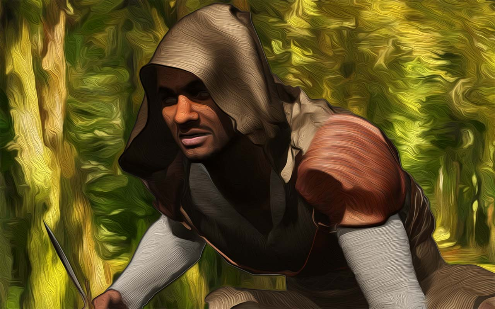
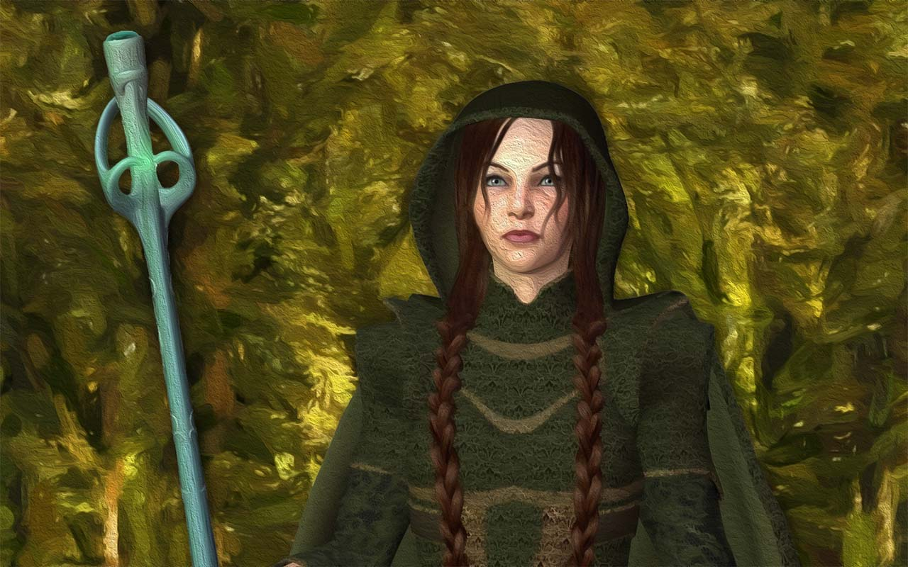
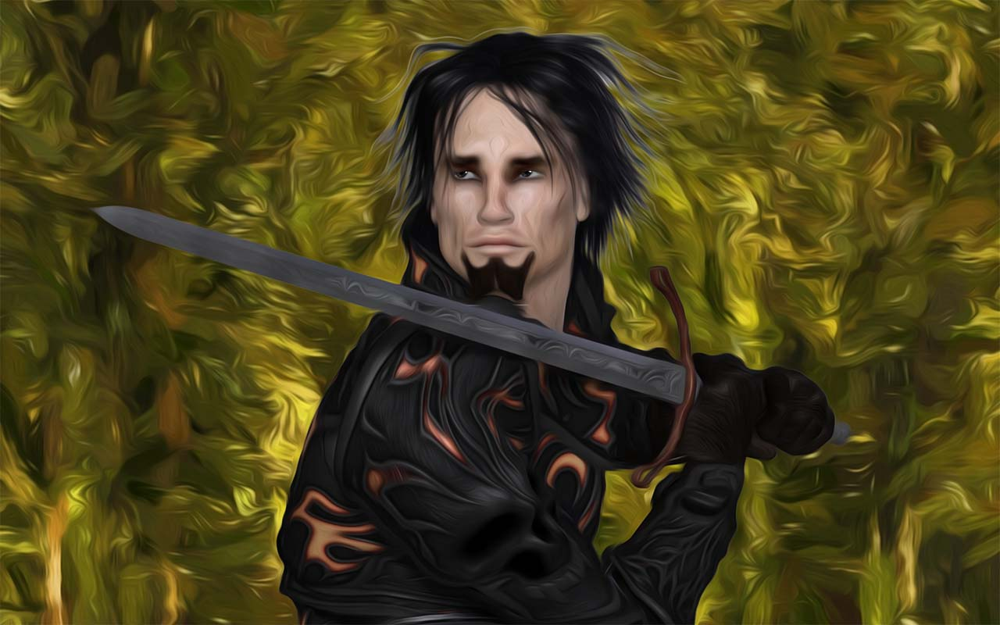
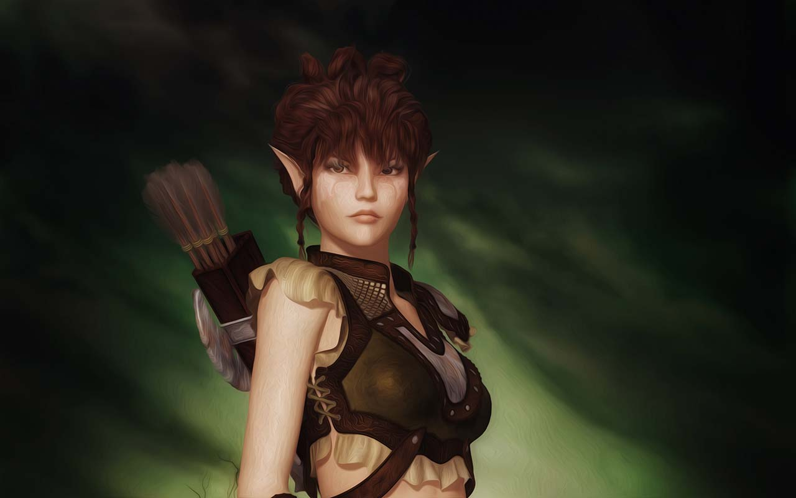
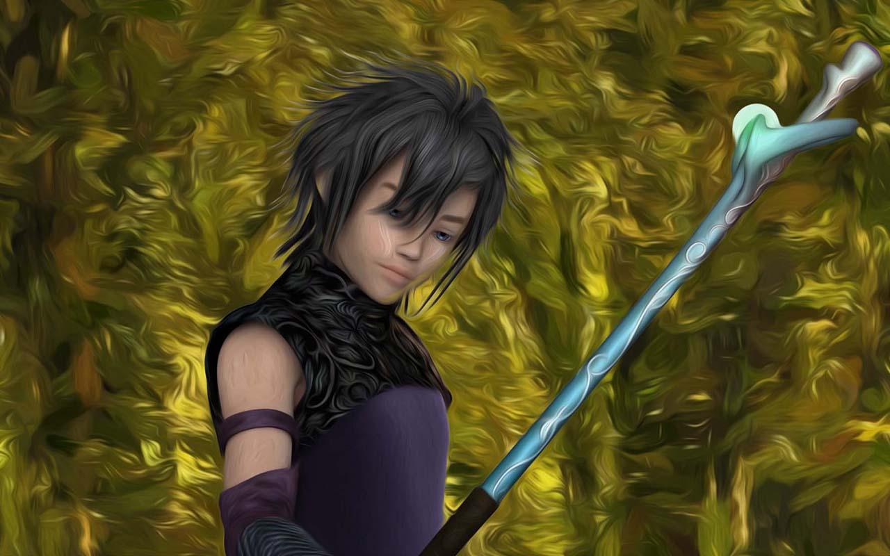
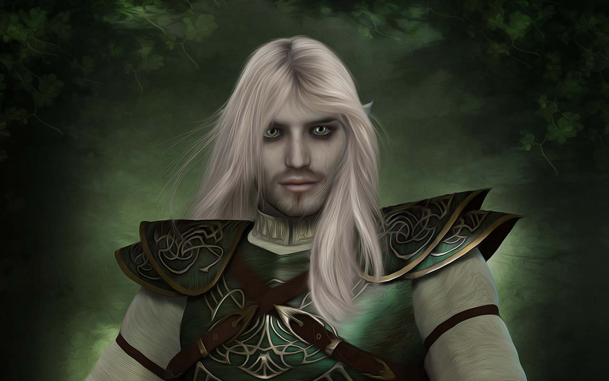
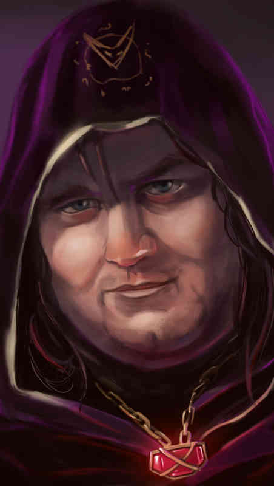
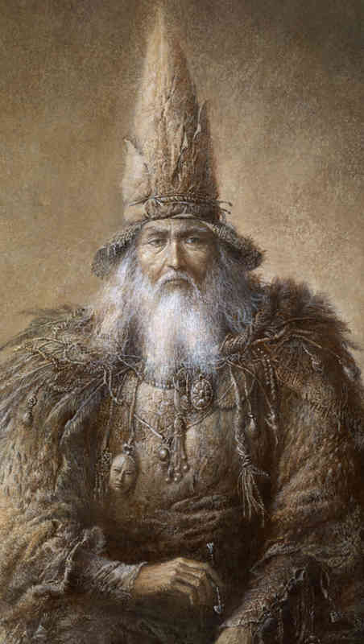
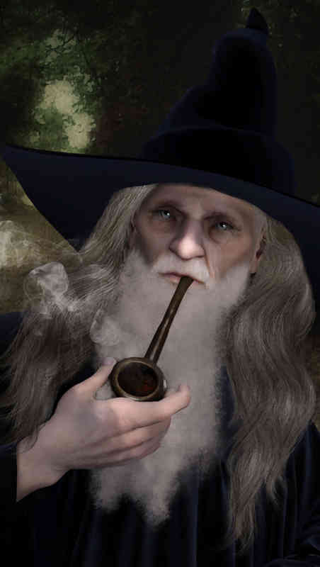
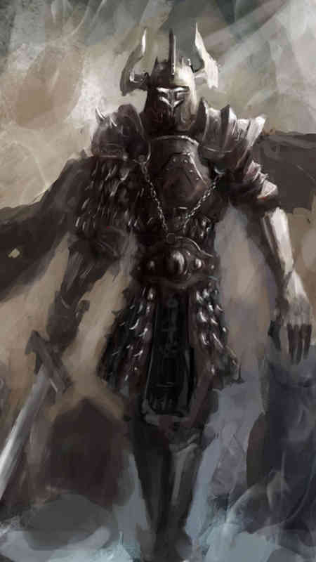

Un poderoso nigromante, Gramdum Elojia, ha intentado usar un artefacto para absorber la energía divina del cadáver de un antiguo dios muerto que flotaba en el Plano Astral. Durante el proceso, una enorme explosión mágica ha disgregado los restos del cadáver por el Plano Material Primario. Gramdum Elojia ha localizado algunos de estos restos y ha enviado expediciones para recuperar los despojos. La primera de estas expediciones se encuentra en Las Montañas del Invasor, trabajando sobre los restos de la cabeza del Dios muerto, Rakaj.
Debido al brutal impacto de la cabeza contra la cordillera, una espesa nube de cenizas y tierra en suspensión se ha extendido por toda la región arrasando las cosechas y matando el ganado de las granjas cercanas. Aunque la zona está poco habitada, los residentes se han visto obligados a abandonar sus hogares y refugiarse en la cercana ciudad de Sâlorium. El nigromante sabe que las autoridades de la ciudad no tardarán en enviar a alguien para que averigüe que ha sucedido, y no está dispuesto a que su secreto sea desvelado antes de tiempo. Por ello, decide lanzar un brutal ataque contra Sâlorium con el fin de mermar sus fuerzas y conseguir el tiempo suficiente para acabar su trabajo en las Montañas del Invasor.
Para lograr su fin, Gramdum Elojia envía a Doris, un cambiaformas de su confianza para que reemplace a uno de los maestros de la Escuela de Magia, el profesor Glaucom, y abra una serie de portales por los que enviar una horda que arrase la Escuela, principal defensa de la ciudad. Los jugadores se encuentran así en medio de un rápido y fatal ataque contra la única esperanza que tienen los ciudadanos de Sâlorium de resistir los maquiavélicos planes de Gramdum Elojia.
Rakaj murió hace milenios. Durante una de las batallas que enfrentó a Dioses y Primordiales, esta vetusta deidad encontró su final y, como muchas otras en esos tiempos, acabo olvidada. Tras morir, su cuerpo acabo flotando en el éter del Plano Astral donde ha navegado a la deriva por eones. Existe la teoría de que estos titanes petrificados no están realmente muertos si no que se encuentran en un estado de semi-reposo. Son muchos los testimonios que afirman que los recuerdos de los dioses muertos se reflejan como extraños sueños en las mentes de aquellos que se atreven a caminar sobre la superficie de estos gigantes aletargados. Uno de los eruditos que sostiene esta teoría es Gramdum Elojia, un poderoso nigromante perteneciente a un pequeño culto dedicado a la Madre de los Demonios.
El nombre del culto sólo se escucha en voz baja a lo largo del Multiverso. Voces quedas, que susurran como los textos antiguos, afirman que la madre de los demonios dio a luz a los Señores que gobiernan el Abismo. Otras fuentes incluso van más allá, y se atreven a afirmar que toda la raza demoniaca desciende de ella. Pero no son más que murmullos que, oportunamente, son silenciados cuando algún descerebrado comete la insensatez de intentar aclarar el misterio que rodea a la llamada Madre de los Demonios.
Durante siglos, Gramdum Elojia ha dedicado todo su tiempo y recursos a investigar si quedan rastros de alguna clase de poder latiendo en el interior de estos formidables despojos divinos, conocidos entre los habitantes del Plano Astral como Islas-Dios.
Una Isla-Dios es el cadáver de una deidad petrificada, cuya superficie ha sido alterada por desagradables razas astrales que han convertido el lugar en su hogar, construyendo verdaderas ciudades flotantes.
Gramdum Elojia ha buscado incesantemente un cadáver no colonizado, y no fue hasta hace unos pocos meses que halló el inerte cuerpo de Rakaj flotando en el Mar Astral. Gracias a un artefacto, conocido como El Asimilador, logro extraer parte del poder divino que aún se alojaba en el dios muerto. Pero antes de poder absorber toda esta energía el artefacto colapso, creando un vórtice que atomizó los restos del cuerpo dispersándolos por el Plano Material Primario. Las partes de Rakaj se disgregaron en diferentes tamaños, desde pequeñas esquirlas de palpitante poder, hasta monumentales restos del tamaño de montañas. Tras sobreponerse al fracaso y lamer sus heridas, Gramdum Elojia localizó algunos de estos fragmentos y organizó una expedición para terminar el trabajo. Su primer destino, Las Montañas del Invasor, una zona poco habitada, a unos cientos de leguas de la Ciudad de Sâlorium, hogar de los Personajes Jugadores.
En esta aventura, los jugadores verán su hogar asaltado por las hordas de Gramdum Elojia y averiguarán los misterios que han traído a estos seres hasta las puertas de su casa.
ACTO I - Asalto a la Escuela de Magia: Mientras la expedición de Gramdum Elojia trabaja en Las Montañas del Invasor sobre la cabeza del dios muerto Rakaj, el nigromante ordena un ataque contra la ciudad cercana de Sâlorium. Los jugadores se ven inmersos en una ofensiva brutal llevada a cabo por una horda demoniaca que, a través de portales, asalta la Escuela de Magia de la ciudad. Deberán proteger su vida y la de sus conciudadanos.
ACTO II - Buscando a los culpables: Tras el ataque, los supervivientes se han refugiado en la cripta del Templo y temen un segundo asalto. Los jugadores deberán averiguar quién es el traidor que abrió los portales permitiendo a los demonios asolar la Escuela de Magia.
ACTO III - Buscando a Doris: Los personajes salen al exterior en busca de Doris, el cambiaformas enviado por Gramdum Elojia para sustituir al Maestro Glaucom.
ACTO IV - Buscando huesos: Para poder interrogar a Doris los jugadores se ven obligados a ayudar a la señorita Bilwa que los obliga a viajar al cementerio de Sâlorium en busca de unos extraños ingredientes para crear una poción.
CONCLUSION - Con ayuda de una Poción de Verdad, los jugadores averiguan finalmente el origen del ataque a la Escuela.
Los jugadores deberían, al menos, completar las siguientes siete tareas para completar la Aventura.
Tras investigar en el Escuela de Magia, a los jugadores les queda claro que alguien abrió los portales dentro de la Academia. Los jugadores terminan buscando al maestro en portales, Glaucom, para descubrir que se ha suicidado. Una investigación más detallada revela que en realidad ha sido asesinado hace días, pero hay testigos que afirman haberlo visto hace escasos minutos. Los jugadores averiguarán también que el Maestro Glaucom llevaba semanas visitando una taberna conocida como La Ballena Blanca
Los Jugadores llegan a La Ballena Blanca esquivando a los demonios que aún se encuentran por los callejones de la ciudad. En el establecimiento encuentran al maestro Glaucom, quien revela su verdadero aspecto: se trata de un cambiaformas llamado Doris. Se produce un combate tras el que los jugadores apresan al impostor.
Doris se niega a dar ningún tipo de información y la única manera es que injiera un Elixir de Verdad. Para ello, los jugadores deberán pedir a la señorita Bilwa que prepare la pócima.
Los jugadores localizan a la señorita Bilwa destrozando el laboratorio del maestro Nizgul. La señorita Bilwa confiesa que en realidad tiene casi 100 años, que se ha mantenido joven gracias a pócimas de vida eterna y que era el maestro Nizgul quien la facilitaba los extraños materiales necesarios para la creación de las pociones. Bilwa también confiesa que el viejo nigromante la chantajeaba a cambio de los ingredientes y que desde hace un año que no la proporciona lo necesario, por lo que los efectos mágicos de la poción se han disipado. Con la muerte de Nizgul, la señorita Bilwa no tiene mucho tiempo antes de que los efectos desaparezcan del todo y se convierta en polvo, así que necesita que los jugadores encuentren los materiales antes de que sea demasiado tarde y muera.
Los jugadores se trasladan al Cementerio de la Ciudad, donde tendrán que desenterrar un cadáver para conseguir uno de los elementos esenciales que Bilwa necesita para crear la poción de juventud que la mantenga con vida. Allí se enfrentarán al guardián de los muertos, un espíritu que vigila que los fallecidos no sean molestados.
Tras lograr el ingrediente para la Poción de Juventud, la señorita Bilwa entrega el Elixir de Verdad que suministrar a Doris. Esta revela finalmente que su amo la envió para abrir los portales y así mantener en secreto su trabajo a unas leguas de la ciudad. Doris nos sabe exactamente qué es lo que su amo está haciendo y solo puede indicar el lugar donde se encuentra.
Los jugadores se dirigen a Las Montañas del Invasor, donde hallan la cabeza del Dios Muerto, Rakaj.
Si quieres ya puedes ir a Comienza la Aventura
La aventura se desarrolla en Sâlorium, la principal ciudad en esta parte del continente. Su privilegiada bahía y su ubicación como última frontera de la civilización frente al salvaje norte la convierte en el epicentro financiero y político de la región.
Durante la última semana, la ciudad se ha visto conmocionada por la llegada de cientos de refugiados de las comarcas más cercanas. Abandonaron sus hogares ante la llegada de una gigantesca nube de ceniza y tierra en suspensión que ha acabado con sus cosechas y su ganado. Las autoridades de la ciudad han ubicado a los refugiados en un campamento provisional en los terrenos de la Escuela de Magia mientras determinan como afrontar la situación. La realidad es que nadie en la ciudad sabe porque se ha formado la nube y la paranoia entre los habitantes comienza a crecer con el paso de los días.
Lee lo siguiente a los jugadores para que se sitúen en el momento actual que atraviesa Sâlorium:
La placida vida en Sâlorium se ha visto alterada en los últimos días cuando cientos de refugiados han buscado la seguridad de sus muros y la protección de los afamados y poderosos residentes de su Escuela de Magia. Los recién llegados son granjeros de las comarcas cercanas que vienen huyendo de una gigantesca nube de cenizas y polvo en suspensión que ha arruinado las cosechas y matado al ganado. Las autoridades han ubicado a los refugiados en los terrenos de la Escuela de Magia mientras determinan como afrontar la situación. El nerviosismo y el miedo recorren de la mano las calles de una ciudad que no entiende lo que está pasando. Los rumores se agolpan en las tabernas y los mercados. Allí, unos hablan de un enorme dragón que no tardará en llegar a Sâlorium y dar buena cuenta de ella y de sus habitantes. Otros afirman que, sin duda, se trata de algún tipo de encantamiento lanzado por un chamán de las tribus del norte como advertencia de una inminente invasión de los salvajes. Los hay que incluso ven en la nube una de las señales del fin del mundo y que el castigo de los dioses no se hará esperar. Así, los peores temores sobrevuelan los pensamientos de las buenas gentes de Sâlorium que ya no salen a las calles al caer la noche, se han vuelto un poco más reservados y miran al cielo esperando que en cualquier momento un terrible mal termine con sus vidas
Ahora es el momento de leer a cada jugador donde se encuentra en el momento de comenzar la aventura.
Cada uno de los personajes pre-generados de la aventura tiene un gancho personalizado que le sitúa en un momento y una situación muy concreta antes de que comienza la acción.
Lee a cada jugador el texto de su gancho y después pasa a Ataque a la Escuela, o pasa directamente si no vas a utilizar los ganchos.
Eres el último alumno de la Escuela de Magia de Sâlorium en acostarse esta noche. Has pasado las últimas 12 horas revisando los viejos tomos que el maestro Roniam te recomendó y te diriges somnoliento y hambriento a tu habitación, donde calculas que aún puedas dormir un par de horas antes de que amanezca. Con un bostezo abres la puerta de tu cuarto, apagas el candil que ha iluminado tu camino desde la biblioteca y dejas caer tu cuerpo sobre el catre. No tardas en dormirte. A penas unos minutos después, un estruendo te despierta. Dirías que proviene de la biblioteca, como si varias de las enormes librerías se hubieran desplomado y hecho añicos.
Ha sido un día largo pero tranquilo. Apenas has tenido que atender a ninguno de los refugiados que se cobijan en la Escuela de Magia. Tan sólo un par de torceduras de tobillo y remendar la cabeza de un halfling lastimoso que trabaja como prisionero en las labores de levantar el campamento. Tras cenar con otros de los clérigos que se han acercado a la Escuela de Magia para socorrer a los necesitados, te recuestas y sacas de tu mochila un viejo libro: ' Poemas del Mar de Espejo'. Tras un par de horas leyendo, todo el campamento está en silencio. De repente, un fogonazo de luz comienza a dibujar sobre el suelo un círculo de luz incandescente rodeado de símbolos arcanos. Al tiempo, un torbellino se forma sobre él. El aire comienza a girar frenéticamente arrastrando tiendas, barriles y todo tipo de herramientas que se encuentran cerca.
Anochece y el jefe de la Guardia, un viejo ex militar llamado Menzal, ordena a los guardias de la Escuela que aten a los prisioneros para que durmáis antes de volver al trabajo mañana por la mañana. A empellones, os sujetan al poste clavado en el patio. Después de serviros una ponzoñosa sopa, a la que se atreven a llamar comida, te recuestas en tu montón de pajas e intentas conciliar el sueño. Tras unas pocas horas de descanso, un grito te despierta. Enseguida, se le unen más alaridos y sonido de pisadas a la carrera.
Tras un nuevo día triunfante en la vida del Señor Pirs, se dirige junto a sus camaradas a descansar y celebrar una buena jornada de trabajo. Bien es cierto que el Señor Pirs tuvo algunas tiranteces con el jefe de la Guardia, el sargento Menzal, cuando el señor Pirs decidió escabullirse del patio de la escuela oculto en unos toneles de pescado en salmuera. Pero la diferencia de opiniones entre los dos caballeros se resolvió de manera honorable y una brecha de tres centímetros en la cocorota del Señor Pirs que, por fortuna, un buen sacerdote elfo se apresuró a curar. Tras degustar la frugal cena que le traen los sirvientes, el Señor Pirs se retira a su dormitorio y se tumba en el suelo duro, frío y arenoso, tal y como a él le gusta: siempre ha sostenido que no era nada bueno dormir sobre colchones o superficies cómodas y confortables, ya que atontan el cuerpo y la rápida mente con la que los dioses le han dotado. Tras unas horas de estiramientos y vueltas en el suelo tratando de encontrar una postura aceptable para descansar, el Señor Pirs escucha un grito. Parece ser que está noche también alguien necesitará de las asombrosas habilidades del Señor Pirs.
La noche helada te obliga a frotarte las manos para hacerlas entrar en calor a pesar de llevarlas enguantadas. El viento es aún más frío en lo alto del tejado donde te encuentras vigilando tu objetivo, en cuclillas contra una chimenea cuya sombra oculta tu presencia. Terminas de revisar tu equipo, ajustas los correajes y mides la tensión de la cuerda que has lanzado al otro lado de la calle, hasta una de las torres de la Escuela de Magia. Sientes como tu arnés se tensa y tu cuerpo bambolea cuando te descuelgas sobre el vacío. Lentamente y en silencio dejas que las poleas y la gravedad hagan su trabajo, deslizándote el trecho que separa ambos edificios.
Permite al jugador realizar algún tipo de tirada relativa a sus habilidades de clase, por ejemplo, Equilibrio o Acrobacias en el momento en el que se desliza por la cuerda y Abrir Cerraduras cuando quiera forzar la claraboya para entrar en la Escuela de Magia. También puede intentar Moverse en Silencio y/o Ocultarse en la Sombras. Ten en cuenta que estas tiradas son para que el jugador sienta que está participando en la historia, pero no deberían ser imposibles de superar ya que daría al traste con el objetivo de situarle en la siguiente escena y que conozca a algunos de sus potenciales compañeros.
Con sigilo logras abrir la claraboya del Observatorio de la Escuela de Magia y, con la agilidad que proporcionan años de entrenamiento, desciendes al interior del edificio deslizándote por una larga cuerda. Tocas el suelo y con un grácil movimiento te ocultas tras una mesa. Todo está oscuro y tranquilo. Tal y como habías calculado, te encuentras en la Biblioteca de la Escuela. Te paras un momento a tomar resuello, mientras piensas en el botín de la cámara que pronto estará en tus manos, cuando oyes abrirse la puerta de la habitación. Al asomarte desde tu escondite ves a uno de los guardias haciendo su ronda nocturna.
Agradeces que esta noche te toque hacer tu turno de guardia en el interior de la Escuela de Magia. El frío en el exterior convierte las horas de vigilia en una auténtica penitencia, y aunque recorrer de arriba abajo los oscuros pasillo del complejo no sea una labor placentera, es mucho más agradable que pasar horas en una garita de piedra temblando y rezando porque no se te congele ninguno de los dedos del píe. Tras cruzarte por los pasillos con el maestro Glaucom, uno de los profesores de la escuela, con desgana abres la puerta de la biblioteca para continuar con tu ronda. Entras y extiendes tu brazo sujetando un candil que a duras penas ilumina la enorme estancia. Pesadamente serpenteas entre las enormes librerías copadas de libros y pergaminos.
Tanto Monak como Wilbur se encuentran ahora en la misma sala, pregunta a ambos jugadores si hacen algo en especial. Si no es así, lee el siguiente texto para ambos:
Tras un fogonazo de luz, en el centro de la Biblioteca, comienza a dibujarse sobre el suelo un círculo de luz incandescente rodeado de símbolos arcanos y un torbellino se forma sobre él. El aire comienza a girar frenéticamente, arrastrando pergaminos, libros pequeños y el polvo acumulado en el lugar. La fuerza del viento va en aumento y tumba dos enormes librerías que, con gran estruendo, se hacen añicos al caer al suelo.
Después de leer la introducción pasaremos a Ataque a la Escuela.
images {./images/act-1/salorium.jpg, ./maps/msalorium-es.html, ./maps/mschool-es.html } music {just-adventuring.mp3}
tienes entre tus manos la primera Aventura de Rol de Mesa diseñada para ser dirigida desde una tableta.
El asedio de Sâlorium es una aventura de ambientación medieval-fantástica para personajes de nivel 1, con la que arranca la primera campaña de DigitalD20. La aventura usa el sistema D20 (compatible con DRAGONES & MAZMORRAS® y Pathfinder®) y puede ambientarse en cualquier mundo de juego (Reinos Olvidados®, Dragonlance®, Golarion...)
Los Juegos de Rol consisten en interpretar papeles, generalmente en mundos de fantasía. Se trata de imaginar cómo tu aventurero se enfrenta a los desafíos presentados por el director de juego. Se juega sentado en una mesa con tus amigos, acompañados de una buena cantidad de dados y ganas de pasarlo bien.
Para jugar esta aventura es necesario estar familiarizado con él sistema de juego D20 y tener dados, lápiz y papel. La propia aventura te proporciona las reglas necesarias para resolver cada encuentro. También necesitarás hojas de personaje. Podéis utilizar las vuestras o descargar las hojas pre-generadas de la web www.digitald20.com.
Para jugar El asedio de Sâlorium puedes utilizar los personajes pregenerados o puedes crear tus propios personajes. La historia funciona mejor utilizando los ganchos de los personajes pre-generados que son fácilmente adaptables si decides usar tus propios personajes.
Ten en cuenta que los ganchos que se ofrecen sitúan a cada Personaje en una situación diferente antes del comienzo de la Aventura y empujan a los jugadores a trabajar juntos para enfrentarse a los desafíos que se les plantean.
Puedes leer una sinopsis de la aventura o directamente Comienza la Aventura.
GameThrough divide el contenido de la aventura en encuentros y escenas. La diferencia entre encuentros y escenas es exclusivamente desde el punto de vista de la historia. En los encuentros se resuelve una situación concreta, por ejemplo, un combate o una investigación, las escenas, describen situaciones más abiertas como por ejemplo la exploración de una ciudad. Los encuentros y las escenas se enlazan dependiendo de las decisiones de los jugadores. En la parte baja de la izquierda se mantendrá siempre el menú de gamethrough.
A la izquierda tendrás tres pestañas (A la vista, Cuerpo, Conclusión) y los iconos con las ilustraciones, los mapas, los enemigos y la música.

A la vista, describe lo que los personajes pueden percibir en el encuentro utilizando sus habilidades.
Cuerpo, es la pestaña por defecto con los enlaces a las ilustraciones, enemigos, mapas y música.
Conclusión, describe las consecuencias de las acciones de los personajes.
A la derecha tendrás el texto del encuentro o escena.
La barra de GameThrough proporciona cuatro índices para que puedas moverte a través de la aventura. Cada índice se corresponde uno a los siguientes iconos:
Todas las reglas que necesitas para resolver las situaciones de la aventura te aparecerán en la parte izquierda de la pantalla cuando hagas clic sobre uno de los enlaces rojos o en cursiva.
DigitalD20 es una App que surge de la idea de un grupo de jugadores de rol. Utilizábamos tabletas durante las partidas nos preguntamos si no podíamos sacarle más partido al hecho de tener los libros en formato digital. Nos ha llevado más de dos años, pero al fin este es el resultado.
Fantasy scene knight fighting dragon
The fabulous town
Armoured knight keeping watch (...)
Illustration fo an Alchemist's study (...)
Village Castle In Medieval Times
(...) Passage with torches and clock on the wall
Dark cellar in a medieval castle
Spooky cave entrance in the shape of a skull
Fantasy Landscape
Halloween design background with spooky graveyard, naked tree and graves
Town Inn
Resto de Mapas
Spirit Of Victory
Powerful Gothic Choir
Battle Scene
Epic Seven
Lord of Storm and War
Medieval Battle Theme 02
DRAGONES & MAZMORRAS®, Reinos Olvidados® y Dragonlance® son marcas registradas de Wizards of the Coast. Pathfinder® y Golarion es una marca registrada de Paizo Inc.
Para cuando las cosas se han calmado tras el primer ataque a a Escuela, si los jugadores están refugiados en el Templo (2), lee lo siguiente:
Escucháis el último embate contra las barricadas colocadas en la puerta del Templo y un silencio plomizo, sólo roto por el quejido de algún herido y el llanto de un bebé, inunda la estancia. Parece que los demonios se han retirado. Rápidamente, el Maestro Lormam comienza a dar órdenes señalando con su enorme bastón donde y como quiere las cosas
Las Bestias Fundidoras, ante la imposibilidad de entrar en el Templo debido a los conjuros de protección lanzados por el Director de la Escuela, cejarán en su empeño de derribar las puertas. Entonces, los jugadores serán libres de caminar por la Escuela (utiliza el mapa para ver las descripciones de las habitaciones). La frecuencia de encuentros con Bestias Fundidoras merodeando irá disminuyendo de probabilidad a medida que pase el tiempo, excepto en los encuentros específicos descritos en cada habitación. Si los jugadores no están en el Templo, utiliza también está tabla si quieren desplazarse por el interior de la Academia:
| nºturnos | % Encuentro |
|---|---|
| 1-3 | 90% por habitación, 1d3 bestias fundidoras |
| 4-10 | 50% por habitación, 1d2 bestias fundidoras |
| 11-15 | 25% por habitación, 1d2 bestias fundidoras |
| 16+ | 5% por habitación, 1 bestia fundidora |
El director de la Escuela, el Maestro Lormam, ha lanzado un conjuro de protección en todo el Templo y la Cripta, previniendo de tele-portaciones, apertura de portales, paso en muro, puerta dimensional y todo tipo de transporte al interior del área protegida. Además, propone crear turnos para vigilar las barricadas en las puertas del Templo en grupos de tres hombres cada cuatro horas. Por último, ordena situar a los heridos en la Cripta.
Tanto los sacerdotes mediante conjuros o la señorita Bilwa con su arsenal de pociones pueden curar a los jugadores si lo necesitan. Si los personajes lo piden, la señorita Bilwa puede proporcionarles dos pociones de curar heridas medias a cada personaje si estos abandonan el Templo o la Escuela en alguna misión.
Muestra a los jugadores el mapa de la Escuela con la situación actual. Ahora, son libres de interactuar con los supervivientes y los maestros para recabar la siguiente información:
Si los jugadores hablan con los maestros de la Escuela recibirán la siguiente información. En caso de que se encuentren perdidos proporcionales las piezas de información de la señorita Bilwa y el maestro Roniam. Ni el Maestro Glaucom ni el Maestro Nizgul se encuentran en la cripta.
Maestro Lormam: El director de la Escuela no acierta a adivinar el motivo del ataque ni la naturaleza de los monstruos implicados. Si es consciente, sin embargo, de que el asalto ha venido precedido de un poderoso conjuro de Disipar Magia que ha arrasado las defensas arcanas de la Academia. Su posición es la de esperar la ayuda del exterior e intentar resistir en la cripta. Ha enviado un mensaje mágico a las autoridades de la ciudad para alertarles del peligro.
Sargento Menzal: Como buen hombre de acción, al sargento no le importan ni qué clase de monstruos ha atacado la Escuela ni sus motivaciones, y es partidario de formar un grupo de hombres con agallas e ir a por las bestias fundidoras limpiando habitación por habitación. Cree que ya habrá tiempo más adelante para investigar. Si es interrogado por los títulos de propiedad y el dinero escondidos en su habitación, el sargento se mostrará muy enfadado por haber violado su intimidad y explicará que con los ahorros de su vida ha adquirido recientemente una granja donde retirarse. Si es preguntado por la llave maestra que también oculta en su cuarto terminará confesado que ha estado robando dinero de la Cámara del Tesoro para asegurarse una buena jubilación. Si esta información es revelada, el Maestro Lormam recrimina sus actos a Menzal y le informa de que cuando el asedio a la Escuela finalice le llevará ante la justicia.
La Señorita Bilwa: Ha recibido un mensaje telepático de uno de los alumnos que se encuentran refugiados en la Habitación del sargento Menzal y advierte de que no podrán resistir mucho más el ataque de los demonios. Alguno de los aprendices está gravemente herido. Por otra parte, los jugadores también podrían enterarse de los problemas de la Señorita Bilwa con su acelerado envejecimiento. Una tirada de Intuición (DC 14) indicará que la Señorita Bilwa está especialmente nerviosa, y no necesariamente por el ataque a la Escuela. Si los jugadores se dedican a espiarla, al cabo de un tiempo, la Señorita Bilwa saldrá a hurtadillas de la Cripta a través de la puerta secreta en dirección al laboratorio del Maestro Nizgul.
El maestro Roniam: El bibliotecario permanece callado hasta que, si alguien no lo dice antes, alerta sobre la naturaleza del ataque. Para él, está claro que hay un traidor en la Escuela ya que alguien tuvo que abrir los portales por los que entraron las Bestias Fundidoras. También, puede recomendar que se busque un tomo llamado ‘Criaturas innombrables de los Abismo del Multiverso’ que puede arrojar alguna luz sobre la naturaleza de los asaltantes.
El maestro Glaucom: El experto en portales es el sospechoso más obvio. Cuando los personajes se decidan a interrogar a Glaucom se darán cuenta de que no se encuentra ni en el Templo ni la Cripta, aunque mucha gente afirma haberlo visto vivo tras el ataque por los pasillos de la Escuela.
El maestro Nizgul: El nigromante fue visto por última vez enfrentándose a las Bestias Fundidoras en la Biblioteca durante el ataque. Si los jugadores van allí, en esta sala pueden encontrar el cadáver del maestro.
Los supervivientes especulan toda clase de teorías sobre el origen del ataque, pero poseen muy poca información relevante. Pueden obtener las siguientes pistas de los alumnos y los guardias.
Por si los jugadores se interesan, han muerto o desaparecido:
Algunos de los aprendices de la Escuela han quedado atrapados en la habitación del Sargento Menzal. Un grupo de Bestias Fundidoras custodia la puerta del cuarto impidiendo que lo abandonen. Si los jugadores quieren salvarlos deberán llegar al lugar y después trasladarlos a un lugar seguro. Los jugadores pueden elegir cualquier ruta que les parezca más rápida y segura para realizar la misión. Tanto el Maestro Lormam como el Sargento Menzal estarán de acuerdo en que los personajes intenten el rescate. Los personajes que fueran residentes de la Escuela conocen las rutas posibles para llegar a la Habitación del Maestro Menzal.
Si deciden ir por el Interior de la Escuela, se enfrentarán a un grupo de demonios que asedia la puerta en el encuentro Encerrados.
Si deciden atravesar el Patio de Armas, encontrarán otro grupo de demonios. Si los jugadores eligen esta ruta podrían pedir al Maestro Lormam ayuda mágica para atravesar el muro que separa el Patio de la habitación de Menzal y así evitar a las Bestias Fundidoras que custodian la puerta en el pasillo. Este hará llamar a un aprendiz, llamado Natso, que tiene memorizado un conjuro de Desintegrar con el que podría abrir un boquete en el muro para que los aprendices encerrados puedan salir al Patio.
Alguno de los personajes jugadores puede saber la localización de la Cámara del Tesoro. Si has utilizado los ganchos pre-generados, Wilbur conoce la entrada desde el Despacho del director que le llevará al subterráneo de la Escuela.
Detectar Magia: solo detectan los objetos mágicos de los maestros y las protecciones que ha lanzado el director de la Escuela.
Detectar mal/caos: La mayoría de las personas son buenas, aunque hay alguna excepción entre los refugiados.
Percepción: Una tirada (DC 8) advertirá de la ausencia de los maestros Glaucom y Nizgul. Esta tirada sólo podrán realizarla personajes que residan en la Escuela y conozcan a los dos hechiceros de antemano.
Investigación: Los jugadores pueden realizar tiradas (DC 7) por cada pieza de información que pueden facilitar los maestros y los supervivientes.
Además, ten en cuenta las características generales de la Escuela.
Desde aquí, los jugadores pueden partir a otros encuentros relevantes
images {./images/act-2/magisters.jpg,./maps/mschool-es.html,./images/act-2/crypt.jpg} music {just-adventuring-2.mp3}
Cuatro de los invasores de la Escuela deambulan por la Biblioteca (4) tras el primer asalto. Permanecen agazapados bajo las pilas de madera que antes fueron librerías esperando a sus víctimas. Lee esto a los jugadores cuando entren:
Un silencio sepulcral y la más negra de las oscuridades reinan en la gran biblioteca de la Escuela
Si los jugadores usan alguna fuente de luz:
Los demonios que por aquí han pasado han arrasado el lugar a su paso destrozando la mayor parte de las librerías y mesas hasta hacerlas añicos en montones de madera y papel. El portal que se abrió aquí, y por el que llegaron los invasores, ha desaparecido. En su lugar un enorme cráter ha sido escavado en el suelo.
Permite a los jugadores tiradas de Percepción para percatarse de que los monstruos se ocultan bajo los montones de madera. También pueden tirar Inteligencia para percatarse de que los montones de madera han sido convenientemente apilados.
Buscar el tomo que les pidió el Bibliotecario advertirá a las Bestias de la presencia de los jugadores. Debido a las condiciones de iluminación y el estado de la librería donde se encontraba el libro, los jugadores deberán superar una tirada de Investigación (DC 12).
Si los jugadores investigan el cráter, verán que las Bestias Fundidoras han escavado la tierra y creado un túnel que va hacia la ciudad. Si descienden y continúan andando por el túnel verán como este se bifurca rápidamente y así sucesivamente, creando un verdadero laberinto subterráneo. Si los jugadores persisten en investigar bajo tierra deberán enfrentarse a continuas oleadas de Bestias Fundidoras. Cada 20 metros, aproximadamente, hay una salida al exterior que ha sido usada por las bestias para sorprender a los habitantes de la ciudad. La salida puede encontrarse en una calle o dentro de un edificio, aleatoriamente.
Las Bestias Fundidoras se encuentran ocultas bajo los montones de madera y saltarán sobre cualquiera que pase cerca de ellos. Tienen una tirada de Sigilo +1 e intentarán sorprender a los jugadores. En caso de que los personajes intenten pasar sin ser advertidos las Bestias harán tiradas de Percepción (+1).
Se considera que la Biblioteca está en oscuridad total y todos los personajes, incluidas las Bestias Fundidoras, no ven nada. Los monstruos se guiarán por su sentido de percibir las vibraciones. Las casillas con escombros de las librerías se consideran como escombros menores.
Buscar sin un índice es complicado pero los jugadores pueden localizar cualquier libro que les pueda interesar superando una tirada de Investigación (DC 12). Si van a la habitación del Archivo la tirada será mucho más fácil (DC 6). Además, estas referencias proporcionan un bono de +6 a cualquier tirada de Inteligencia o Sabiduría en busca de conocimiento que pueda estar escrito.
También, pueden encontrar libros de conjuros, con los hechizos más comunes de nivel 1 a 3.
Dependiendo de qué motivo los ha traído a la Biblioteca, los jugadores pueden continuar Buscando culpables
Si los jugadores encuentran Criaturas inombrables de los abismos del multiverso lee lo siguiente:
Extracto rescatado del Diario de Gulimrrar sobre sus Viajes por el Abismo
… la gruta estaba escavada longitudinalmente y rápidamente se bifurcaba en innumerables pasillos de oscuridad total. La luz de mi antorcha iluminaba las paredes y rebotaba entre las estrías que conformaban los muros dibujando un tapiz que parecía compuesto por anchas raíces de árbol. Pasé la mano sobre la superficie y la encontré suave y pulida, como si la roca hubiera sido fundida al ser expuesta a una temperatura desmedida...
… al girar una esquina me detuve en seco. De espaldas frente a mí, un ser de cuatro patas se abría paso creando un pasillo en la roca viva. A su paso la tierra se desmaterializaba permitiéndolo avanzar sin oposición. La criatura tenía el tamaño de un perro grande. Su piel era metálica y sus pezuñas, como las de un caballo, hacían saltar pequeñas chispas cuando chocaban contra la piedra. Dos cuernos curvos como los de un carnero flanqueaban su cabeza y unas largas y afiladas púas coronaban su lomo...
...el animal se giró y pude ver sus ojos rojos como el fuego mirando en mi dirección. Me pegué contra la pared y mantuve la respiración. Estaba seguro de que no podía haberme visto pero aún así supo que me encontraba espiándole y salió a la carrera en mi dirección. Desenvainé a Tzoral, recé a Salandir y me dispuse a pelear por mi vida...
… seguía buscando una salida de aquellos malditos túneles del Abismo cuando volví a encontrarme con aquellas extrañas bestias que 'fundían' la roca a su paso. Está vez se encontraban en una enorme cueva en la que decenas de estas criaturas descansaban medio adormecidas. Después de unos minutos valorando si dar media vuelta y buscar otra ruta o intentar pasar desapercibido entre ellas, una especie de demonio enano y regordete, con un cuerpo amorfo y pequeñas extremidades, apareció por otro de los pasillos que desembocaban en la gruta. No sé si se dirigió a las bestias verbal o mágicamente pero cuando levantó su pequeño brazo todas se pusieron en movimiento y comenzaron a escavar más túneles allí donde el gelatinoso ser lo indicaba...
Tras la lectura del texto, los jugadores pueden sacar sus propias conclusiones y además hacer una tirada de conocimiento para saber, a discrección del Master, las habilidades básicas de las Bestias Fundidoras.
images {./images/act-1/library.jpg, ./images/maps/library-map-2.jpg, ./images/monsters/hellhound.jpg} music {outside-school.mp3}
Los jugadores pueden llegar a la habitación de Nizgul a través de la trampilla situada en el Archivo de la Biblioteca (9) o por el río subterráneo. También pueden descubrir la puerta secreta en el pasillo que da a la Cámara del Tesoro, en los Subterráneos de la Escuela.
La sala en la que entráis tiene la atmosfera cargada y la humedad hace difícil respirar. Os encontráis en el laboratorio del Maestro Nizgul. Todo está patas arriba, como si alguien en un ataque de rabiosa locura hubiera arrasado la estancia. En el centro, una mesa de mármol con restos de sangre seca domina la sala. A un lado, un largo escritorio de piedra sirve para albergar toda clase de alambiques, ingredientes para conjuros y libros de tiempo inmemorial, mientras que en el muro contrario, una serie de estanterías acogen una nutrida biblioteca. Pero todos estos detalles pasan casi inadvertidos comparados con la bizarra imagen en el muro frente a vosotros. Cinco enormes contenedores albergan a otros tantos seres, medio putrefactos, sumergidos en una solución verde que burbujea formando espuma en la superficie de los tanques. Junto a ellos una escala de mano da acceso a una de las aulas del piso superior. El silencio se rompe cuando escucháis el ruido de una redoma de cristal estrellándose contra el suelo. El sonido proviene de detrás de la puerta del muro sur. Con cuidado, atravesando un suelo lleno de botes rotos, os acercáis a la puerta mientras al otro lado continuáis oyendo el ruido de más cristales rotos.
Los seres de los tanques son experimentos nigrománticos fallidos de Nizgul, por lo que son inofensivos. Al otro lado de la puerta se encuentra la señorita Bilwa registrando la otra sala.
Lee lo siguiente cuando abran la puerta:
Esta puerta da acceso a un pequeño almacén, forrado por estanterías que contienen una innumerable cantidad de frascos y botes. En la habitación, un ser embozado en una oscura capa marrón verdosa registra nerviosamente cada una de las redomas. Abre una, mira su interior y la lanza contra el suelo. Así, una detrás de otra
Cuando los jugadores vean el rostro de este ser, lee lo siguiente y muéstrales la imagen de la anciana:
Se trata de una mujer muy anciana, cuyos surcos en su ajada piel relatan las vivencias de una larga existencia más allá de lo natural. Pero sus ojos os resultan familiares ¡Se trata de la Señorita Bilwa!
Este encuentro se puede jugar de dos formas diferentes.
La alquimista confiesa que en realidad tiene más de 200 años y ha logrado mantenerse joven gracias a pócimas de Vida Eterna, que fabricaba gracias a los ingredientes que le facilitaba el Maestro Nizgul. Bilwa también confiesa que el viejo nigromante jugaba con ella y que hace un año ya que no la proporciona lo necesario. Por eso, los efectos mágicos de la poción se han disipado. Con la muerte de Nizgul la señorita Bilwa no tiene mucho tiempo antes de que los encantamientos desaparezcan del todo y se convierta en polvo, así que necesita que los jugadores encuentren los materiales antes de que sea demasiado tarde y muera. Dice a los jugadores que les proporcionará el Elixir de Verdad para administrar a Doris si ellos consiguen el ingrediente que la falta para crear su Poción de Juventud: Los dientes de un finado que lleve tanto tiempo muerto como ella evitando la muerte, 214 años exactamente. Para ello, los jugadores deberán ir al Cementerio de la ciudad y buscar un cadáver que lleve ese tiempo fallecido. La señorita Bilwa está muy alterada y teme por su vida, así que no entregará ningún Elixir de Verdad hasta que los jugadores la consigan su ingrediente.
La Señorita Bilwa contará la misma historia que en el anterior supuesto e intentará influenciar (incluso hechizar) a los jugadores para que la consigan el ingrediente que falta para su poción de juventud.
En cualquier caso, y si los jugadores aceptan ayudarla, la señorita Bilwa les ofrece robar armas mágicas de la Cámara del Tesoro, ya que considera que sin ellas los personajes no podrán hacer frente a los espíritus que protegen el cementerio. No mencionará a los espíritus si no es preguntada directamente y les propondrá robar las armas con la excusa de que tal vez las necesiten, sin especificar porqué. La hechicera acompañará a los jugadores a la Cámara del Tesoro para evitar que roben más de lo necesario.
Para localizar el cadáver que necesita la señorita Bilwa, el sitio más adecuado es el Cementerio de la ciudad. Picos y palas pueden ser encontrados fácilmente dentro de la Escuela.
Los jugadores podrán ir, por recomendación de la señorita Bilwa, a buscar armas mágicas a la Cámara del Tesoro o directamente se pueden poner manos a la obra Buscando Huesos.
También, pueden seguir con los asuntos pendientes Buscando culpables
images {./images/act-2/nizgul-room-portrait.jpg, ./maps/mschool_dungeon-es.html, ./images/act-2/old-woman.jpg } music {nizgul-room.mp3}
La Escuela de Magia tiene una Cámara del Tesoro donde el director guarda los recursos financieros y otros objetos de valor. Los jugadores podrían llegar a esta localización o bien por azar, porque uno de los personajes sabe de su existencia o gracias a la información que les proporciona la señorita Bilwa.
Una enorme plancha de metal pulido os cierra el paso mientras la luz de las antorchas rebota contra los remaches dorados que sujetan la tabla metálica a las paredes. En su centro, veis una cerradura y un círculo con números. Parece ser que algún tipo de mecanismo puede manipularse a modo de rueda giratoria.
Los números y la rueda no son más que decoraciones para despistar a los ladrones. No hace falta más que la llave correcta para abrir esta puerta.
Los jugadores deberán abrir la cerradura y desactivar la trampa de la puerta de la Cámara del Tesoro para poder acceder a su interior. Si se activa la trampa, un rayo surgirá de la puerta golpeando a quien se encuentre frente a ella.
Los jugadores pueden desactivar la trampa si llevan herramienta y superan una tirada de Investigación y posteriormente Destreza (DC 13). Si no se desmonta, se activará un conjuro de Scorching Ray, un sólo rayo que producirá daño (2d6) a quien esté manipulando la puerta en la casilla frente a ella. Después, la puerta exige superar una tirada de Destreza (DC 15) con herramientas para poder entrar en la Cámara del Tesoro.
También, pueden emplear la llave maestra que tenía el Sargento Menzal en sus aposentos para abrir la puerta. Existe otra llave, en poder del Director Lormam, pero es difícil que pudieran hacerse con ella. Si se utiliza una de estas dos llaves, la trampa no se activará.
Si intentan romper la puerta, lo tendrán bastante complicado ya que tiene 60 puntos de golpe y una resistencia de 12.
Las antorchas de la sala arden nada más abrirse la puerta e iluminan una pequeña estancia. Un par de cofres de nogal descansan contra la pared de enfrente y un armero cubre la pared de vuestra izquierda mostrando una variada colección de armas conservadas en un excelente estado.
Tesoro: Cuatro lingotes de oro por valor de 300mo cada uno. 200 monedas de cobre, 100 monedas de plata, 68 monedas de oro, tres gemas de 50 monedas de plata cada, cinco pociones de curar heridas ligeras, una poción escalada, una varita de bolas de fuego (con 4 cargas) y un saco contenedor menor. Además, hay una arma mágica (+1) adecuada para cada uno de los personajes.
Si los personajes van acompañados de la señorita Bilwa solo les permitirá llevarse las armas que necesitan. Puede ser chantajeada con contar su secreto si se opone, y aceptará, pues no está dispuesta a que nadie sepa que realmente es una mujer anciana y no la bella dama que todos creen. Su vanidad la vencerá.
Si han venido por recomendación de la señorita Bilwa, ya tendrán las armas para enfrentarse a los espíritus del Cementerio y seguramente continúen dirigiéndose al camposanto Buscando Huesos.
Si los jugadores han robado el tesoro por avaricia, pueden continuar resolviendo los asuntos pendientes y Buscando culpables.
images {./images/act-2/treasure-room-portrait.jpg, ./maps/mschool_dungeon-es.html, ./maps/mschool-es.html } music {just-adventuring.mp3}
Si es la segunda vez que salen de la ciudad, vete a Saliendo por segunda vez.
Si es la primera, continúa aquí: Los personajes deberían salir en algún momento de la Escuela, ya sea para visitar la ciudad, dirigirse al Cementerio o a la Ballena Blanca. La única puerta de salida se encuentra en el patio. Otras posibles salidas son:
La claraboya en el Observatorio de la Biblioteca: pueden utilizar las cuerdas que utilizó Wilbur para entrar en la Escuela.
Alguna de las chimeneas de la Escuela: Es necesario superar una tirada de Destreza (DC 10) para subir por el interior de una chimenea.
El pasadizo hasta la Torre de Vigilancia
Navegando por los Subterráneos
Si ya han limpiado de monstruos el Patio, esta será la ruta más sencilla. Si no es así, deberán enfrentarse a los monstruos en el Patio de Armas.
Si esta es la primera vez que los jugadores salen a la calle lee lo siguiente:
Aún no ha amanecido y las calles de Sâlorium a estas horas suelen ser tranquilas. Pero no hoy. Decenas de gritos provenientes de todas las zonas de la ciudad desgarran el ambiente advirtiendo del peligro que supone la horda de demonios vomitada por los portales de la Escuela de Magia
Los jugadores deberán ser cautelosos a la hora de moverse por las calles. Grupos de Bestias Fundidoras recorren la ciudad en busca de víctimas y otros cientos aguardan bajo los adoquines en los túneles que están construyendo bajo la urbe. Los jugadores deben sentir que en cada momento una bestia fundidora puede salir al girar una esquina o que el suelo puede abrirse y enviarlos a una muerte segura. Dedicarse al saqueo o cualquier otro menester que no sea desplazarse por los tejados es una actividad de alto riesgo.
Los jugadores tendrán que idear una forma segura de desplazarse por la ciudad. La forma más sencilla de evitar los encuentros es ir por los tejados de Sâlorium. Si no se les ocurre permite una tirada de Percepción (DC 8) para darse cuenta de que las bestias no suben a los tejados. Si viajan por el suelo, la probabilidad de encuentro dependerá de su habilidad de Sigilo. Permite bonificadores positivos si son creativos.
| Esconderse | % Encuentro |
|---|---|
| 1-3 | 90% 1d2 bestias fundidoras |
| 4-10 | 50% 1d2 bestias fundidoras |
| 11-15 | 25% 1d2 bestias fundidoras |
| 16+ | 5% 1d2 bestia fundidora |
Los jugadores deben pasar por Rufianes del Mercado antes de llegar a La Ballena Blanca, a no ser que sean capaces de cruzar el rio a nado Fuerza (DC 12) o que el Master quiera evitar el encuentro.
Además, se pueden encontrar con alguna de las siguientes situaciones:
| 1d4 | Situación | |
|---|---|---|
| 1 | Encuentras un saco con 10 monedas de oro pobremente escondido en uno de los tejados. Uno de los ladrones de la cofradía de la ciudad ha ocultado aquí su botín. | |
| 2 | Un Guardia de la ciudad se enfrenta a dos Bestias fundidoras en un callejón justo debajo de por donde pasan los jugadores. Está tratando de defender la vida de un par de jóvenes y una mujer adulta. Si los jugadores los ignoran y siguen su camino, la mujer los maldecirá con el puño en alto por su cobardía. | |
| 3 | Un grupo de tejas se rompen al pasar sobre ellas. Uno o varios de los jugadores (a discreción del Master) deben superar una tirada de Destreza (DC 6) para no resbalar por el tejado, caer a la calle y sufrir 1d6 puntos de daño. | |
| 4 | Un grupo de vecinos se ha refugiado en la azotea de su edificio. Si los jugadores entablan algún contacto con ellos, uno de los hombres les pedirá que entren en la casa y rescaten a su nieto menor, que se ha quedado aterrado en su cuarto. El hombre es muy anciano para hacerlo por sí mismo y el resto de vecinos no quiere arriesgar la vida. Si los jugadores se deciden por ayudar al hombre, este le indicará donde encontrar a su familiar. No hay ningún monstruo en el edificio por lo que los jugadores podrán quedar como unos héroes sin tener que poner su vida en peligro. Este evento proporciona inspiración a los jugadores. |
Los jugadores deben abandonar la Escuela. Ya ha amanecido y las fuerzas de la ciudad se han reorganizado para hacer frente a las Bestias Fundidoras. Una gran batalla se está librando en la zona norte de la ciudad, donde los demonios han acudido en masa para hacer frente a los hombres, por lo que los jugadores no deberían encontrar a ningún enemigo en su trayecto hasta La Ballena Blanca.
Lee lo siguiente al poco de que salgan de la Escuela:
Observáis como un grupo de unos 20 demonios corren calle arriba en tropel, empujándose unos a otros ansiosos por llegar a su destino. Os percatáis de que algunos de los monstruos son conscientes de vuestra presencia, pero os ignoran y continúan su desbocada carrera.
Las Bestias Fundidoras se dirigen a unirse a la batalla. Si los personajes no las siguen, en algún momento escucharán el ruido de la pelea, pero si no se acercan no verán el combate (en ese caso lee solo la primera parte de la siguiente descripción). Si, por el contrario, los jugadores siguen a los demonios, o más tarde se acercan a la batalla, lee la descripción completa:
El sonido de la lucha se hace cada vez más evidente a cada paso que dais. Una enorme batalla se está produciendo unas calles más arriba, cada vez más cerca de vuestra posición.
Un cuadro dantesco se dibuja ante vosotros. La Guardia de la Ciudad, junto con aquellos ciudadanos lo suficientemente gallardos, hace frente a la horda de demonios que se lanza de manera kamikaze contra las líneas de alabarderos ignorando el daño que reciben y con el único objetivo de provocar el mayor número posible de bajas entre los defensores de la ciudad. Aquí y allá enormes cráteres se abren en el suelo engullendo a grupos completos de hombres, que desaparecen en las oscuras entrañas de la tierra. Los gritos de los soldados y los bufidos de los monstruos se mezclan con el sonido de las chispas que surgen al chocar el acero de las armas contra la piel metálica de las bestias. Sangre y tierra se entremezclan en un lodazal sobre él que hombres contra aberraciones deciden el destino de Sâlorium
Los jugadores podrían querer participar en la batalla. Si esto sucede, asume que cada jugador se enfrenta cada vez a entre una y dos Bestias Fundidoras. Cada vez que el jugador acabe con sus adversarios, otras tantas aberraciones tomarán su lugar. Si los jugadores persisten en mantenerse en la batalla y se las ingenian para sobrevivir, verán como tras una hora de lucha intensa, los monstruos son derrotados. Aun así, el precio para salvar Sâlorium ha sido demasiado grande, ya que las fuerzas de la ciudad han sido mermadas para que ya no supongan una amenaza a los planes de Gramdum Elojia.
Además, ten en cuenta las características generales de la Escuela.
De camino a la Ballena Blanca pasarán por un Mercado donde un grupo de maleantes intenta robar a unos ciudadanos. Rufianes del Mercado.
Si prefieres ahorrarte el encuentro en el Mercado, puedes saltar directamente a La Ballena Blanca
images {./images/act-1/salorium.jpg, ./maps/msalorium-es.html, ./maps/mschool-es.html} music {outside-school.mp3}
Los jugadores pueden optar por intentar llegar a la habitación de Menzal (32) atravesando el Patio de Armas (1). También pueden atravesarlo para intentar salir al exterior. Lee lo siguiente cuando vayan a entrar:
Os encontráis en el desolado Patio de la Escuela. El campamento ha sido arrasado por la horda de bestias y decenas de cuerpos siembran la explanada. Además, los atacantes han hecho polvo las puertas de acceso al recinto y por las huellas parece que cientos de ellos se han adentrado en la ciudad. Pero lo que más os llama la atención es un enorme cráter que ha aparecido en mitad de la explanada
Los demonios permanecen ocultos (Sigilo +1): uno de ellos, entre los restos de las tiendas, saltará si alguno de los jugadores intenta atravesar la puerta de salida a la ciudad. Otro de ellos, oculto en el cráter, atacará si algún insensato se asoma a mirar. Los otros dos están bajo tierra y a la espera de que alguien pase sobre ellos o por las casillas adyacentes. Intentarán atacar al unísono y atrapar al mayor número posible de enemigos.
Si los jugadores investigan el cráter, verán que las Bestias Fundidoras han escavado la tierra y creado dos túneles. Uno va hacia la ciudad y otro hacia donde se encuentran los dos monstruos escondidos bajo el suelo del patio. Si descienden e investigan el camino que va hacía la ciudad, verán como este se bifurca rápidamente y así sucesivamente, creando un verdadero laberinto subterráneo. Si los Jugadores persisten en moverse bajo tierra, deberán enfrentarse a continuas oleadas de Bestias Fundidoras. Cada 20 metros, aproximadamente, hay una salida al exterior que ha sido usada por los demonios para sorprender a los habitantes de la ciudad. La salida puede encontrarse en una calle o dentro de un edificio, aleatoriamente.
Los jugadores probablemente continúen ha rescatar a los alumnos Encerrados. También, podrían dedicarse a otros asuntos y seguir Buscando culpables, Buscando a Doris o Buscando Huesos.
images {./images/act-1/playground-2.jpg,./maps/mschool-es.html, ./images/maps/southplayground-map-2.jpg } music {playground.mp3}
Tras averiguar que el maestro Glaucom está desaparecido los jugadores se dirigen a los aposentos este (10). La puerta está cerrada, abrirla exige una tirada de Destreza (DC 21) con herramientas o Fuerza (DC 18) romperla a base de golpes sabiendo que tiene resistencia 5 y 30 puntos de golpe.
Cuando entren en la habitación, lee lo siguiente (el texto es una adaptación de una descripción aparecida en la novela 'El amor en los tiempos del cólera', de Gabriel García Márquez:
Es inevitable: el olor de las almendras amargas recuerda siempre el destino de una vida contrariada. Lo percibís desde que entráis en la habitación en penumbras. El Maestro Glaucom, inválido de guerra, erudito y compasivo adversario de ajedrez, se ha puesto a salvo de los tormentos de la memoria con un sahumerio de cianuro. Encontráis el cadáver cubierto con una manta en el catre de campaña donde había dormido siempre, cerca de un taburete con la cubeta que había servido para vaporizar el veneno. En el suelo junto al catre, está el cuerpo tendido de un gran danés negro de pecho nevado, y junto a él están las muletas. Cualquier resquicio de la habitación está amordazado con trapos o sellado con cartones negros, y eso aumentaba su densidad opresiva. Hay un mesón atiborrado de frascos y pomos sin rótulos, y dos cubetas de peltre descascarado. Hay pergaminos y libros viejos por todas partes, pilas de cajas donde anidaban decenas de redomas que conservan líquidos imposibles de catalogar, pero todo preservado del polvo por una mano diligente
Los jugadores tienen ahora la opción de investigar diferentes aspectos de la habitación.
El Maestro Glaucom está desnudo por completo, tieso y torcido, con los ojos abiertos y el cuerpo azul, y como cincuenta años más viejo que la noche anterior. Tiene las pupilas diáfanas, la barba y los cabellos amarillentos, y el vientre atravesado por una cicatriz antigua cosida con nudos de enfardelar. Su torso y sus brazos tenían una envergadura de galeote por el trabajo de las muletas, pero sus piernas inermes parecían de huérfano.
Después de que los personajes investiguen la habitación y el cadáver, un joven aprendiz, Illius de Torak, compañero de Yonse, entra corriendo en la habitación y se lanza llorando sobre el cadáver de su maestro. Illius era el favorito de Glaucom, y este lo había tomado bajo su ala como su asistente personal. Los jugadores pueden hablar con Illius cuando se calme. Una conversación con él revelará lo siguiente:
El maestro llevaba una semana o dos comportándose de manera errática. Ya no tenía ninguna relación con Illius, al que había apartado totalmente de su lado en los últimos tiempos.
Illius sabe, por lo que le comentaron otros aprendices, que el Maestro Glaucom era visto por las noches deambulando por la Escuela sin aparente razón.
Illius, preocupado por su maestro, pasó un par de noches espiando a Glaucom y llegó a seguirle hasta una maloliente posada del muelle donde el maestro pasó toda la noche. Illius sospecha que hacía uso de los servicios de alguna mujer de vida distraída.
La verdad es que Illius no siguió a Glaucom, si no a Doris, el cambiaformas que lo sustituyo. Doris visitó esa noche la posada de ‘La Ballena Blanca’ para recibir instrucciones de un enviado de su amo.
Una tirada de Curar revelará el siguiente conocimiento sobre el cianuro:
Una tirada de Investigación o Medicina sobre el cadáver revelará lo siguiente:
Una tirada de Percepción sobre la zona de la cama revelará lo siguiente:
Una tirada de Percepción o Investigación sobre las muletas revelará lo siguiente:
Una tirada de Medicina o Conocimiento de la Naturaleza sobre el cuerpo del gran danés muerto revelará lo siguiente:
En este punto los personajes deberían haber averiguado lo siguiente:
Si deciden seguir la pista de la Ballena Blanca, saldrán al exterior Buscando a Doris.
Los jugadores pueden continuar investigando la Escuela y Buscando culpables.
images {./images/act-2/glaucom-room.jpg , ./maps/mschool-es.html,./images/maps/glaucom-map.jpg } music {glaucom-room.mp3}
Bien se desplacen a ras de tierra o por los tejados, los jugadores llegarán a una plaza de mercado. En ese momento, lee lo siguiente:
Llegáis a una plaza. Para seguir vuestro camino debéis cruzarla y exponeros en campo abierto, o bien dar un rodeo buscando una ruta más protegida pero más larga. Las dudas os corroen cuando escucháis un grito. Unos hombres entran en la plaza empujando y arrastrando a varias personas. Los hombres son cuatro y tienen el aspecto peligroso de la típica mala hierba que arraiga en el barrio del puerto. Las víctimas, tres mujeres con dos niños y dos hombres, a los que han molido a palos previamente, suplican por su vida. Parece que un grupo de bastardos quiere sacar provecho del caos en la ciudad masacrando a los más débiles
Los jugadores deben elegir si socorren a las víctimas o los ignoran. Si Wilbur está en el grupo, reconoce a los ladrones como miembros de la banda de ‘El Tuerto’. Si los personajes deciden intervenir para salvar a las víctimas, los maleantes se dirigirán a Wilbur dejando en evidencia su relación con el personaje diciendo cosas del tipo:
¡Eh! Wilbur, ¿Qué haces por aquí, también has salido de caza?” o “Estas son nuestras presas, búscate las tuyas, payaso”
Wilbur podría intentar negociar con ellos para que dejen en paz a sus víctimas, pero se negarán en redondo. Cuando vean que el enfrentamiento es irreversible uno de ellos, el líder dirá:
Esto que haces no le va a gustar al Tuerto, lo pagarás
Si los jugadores no intervienen, los maleantes asesinarán a sus víctimas, las robarán y se irán por donde han venido.
Si los jugadores luchan contra los malhechores, uno de los asaltantes que se encuentre en meleé con algún jugador, al sentirse acorralado tomará a uno de los niños como escudo humano y amenazará con asesinarle si no le dejan huir. En ese momento, el suelo se abrirá en una casilla adyacente al villano y de la tierra surgirá una Bestia Fundidora que absorberá al cobarde al fondo del pozo. Un jugador cercano puede tirar Reflejos (DC 8) para recoger al niño y que no sea engullido al agujero. Después, los jugadores tendrán dos turnos para abandonar la zona y ponerse a salvo de los monstruos comenzarán a surgir del nuevo cráter.
Los maleantes no emplean ninguna táctica sofisticada, no son más que navajeros de medio pelo. Eso sí, aprecian su vida por encima de todo y no dudarán en usar a sus víctimas como escudos humanos si la situación lo requiere. No son suicidas y prefieren huir o rendirse antes que morir.
Los maleantes acabarán muertos o huyendo. Tras el combate, las víctimas agradecerán su valor a los jugadores y saldrán corriendo a refugiarse antes de que aparezcan más Bestias Fundidoras.
Pasado este encuentro, los jugadores pueden ir a cualquier lugar del pueblo, probablemente a La Ballena Blanca
images {./images/act-3/square.jpg, ./images/maps/square-map.jpg, ./maps/msalorium-es.html} music {school-under-attack.mp3}
Los jugadores llegarán finalmente a la Ballena Blanca para encontrar que la puerta de posada está trancada por dentro. Si quieren enterar, los personajes deberán forzar la puerta (Resistencia 5 y 20 puntos de golpe) o trepar hasta alguna ventana Destreza (DC 11). También pueden llamar a la puerta y esperar a que Zorx, el dueño de la posada, decida dejarlos pasar dentro. Para convencerlo, los personajes deberán ser muy persuasivos pues el posadero está muy asustado por lo que ocurre fuera.
Una vez en el interior, los personajes deberían buscar a Doris, que se encuentra en una habitación en el piso superior. Si los jugadores han entrado por las buenas y preguntan al posadero este admitirá que un anciano con la descripción del Maestro Glaucom se encuentra en el piso superior.
Si han entrado por las malas, Zorx se enfrentará a ellos, pero al verse superado se rendirá. No quiere morir. Los demás clientes pueden intervenir o no, dependiendo del grado de agresividad de los jugadores y del estado físico en el que se encuentren. Si ya han perdido mucha vida en su camino hasta la posada tal vez no sea recomendable que tengan otro combate antes de enfrentarse a Doris. Además, un combate en el piso inferior alertaría al cambiaformas y este trataría de escapar por los tejados.
Doris se encuentra descansando en el piso superior. Acaba de enviar un mensaje a su amo a través de un mensajero que le esperaba en la Ballena Blanca y ha cobrado por su trabajo. Espera que las cosas se calmen un poco en la ciudad y abandonarla lo más rápido posible. Lee lo siguiente a los jugadores cuando entren en la habitación:
El cuarto es la vulgar habitación que esperarías encontrar en cualquier vulgar posada. En la cama un, aparentemente, cansado Maestro Glaucom dormita hasta que irrumpís en el lugar. Con una agilidad inusitada para alguien inválido, el mago salta y se coloca junto al catre mientras os mira desafiante: "Vaya, parece que ya no son necesarios más engaños, je je. Lo habéis hecho bien, pero por desgracia, no saldréis con vida de este lugar", dice mientras sus rasgos y cuerpo cambian hasta mostrar su verdadera forma
Muestra a los jugadores la imagen del cambiaformas.
Doris es un hábil combatiente e intentará eliminar a los personajes. Si se ve superado, intentará salir al tejado por la ventana y emprender la huida. Si no pude huir, se rendirá ya que aprecia demasiado su vida.
Doris será apresado por los jugadores, pero no revelará nada sobre sus planes o quien lo envió para abrir los portales. Si es registrado, los jugadores encontrarán una bolsa con gemas por valor de 500mo. El desgastado saco tiene grabado el símbolo de la Madre de los Demonios (mostrar ilustración).
Si los personajes desean sacar información a Doris deberán hacerlo por medios mágicos. La señorita Bilwa puede preparar un elixir de verdad. Pero para ello deberán regresar a la Escuela.
Debajo de la cama Doris guarda un saco donde esconde los objetos que robó al maestro Glaucom. En su interior se encuentra lo siguiente:
Los jugadores pueden optar por quedarse los objetos o devolvérselos a la Escuela. Si los devuelven, el director de la Escuela solo querrá recuperar la Vara de Paso y a cambio entregará 10.000 mo.
Una vez que los personajes tengan a Doris a su cargo, comienza el siguiente acto: El Prisionero.
images {./images/act-3/tavern-portrait.jpg, ./images/maps/N1-2-tavern-map.jpg, ./maps/msalorium-es.html } music {just-adventuring-2.mp3}
Los jugadores vuelven a la Escuela con Doris como prisionera. Una vez más, los combates en la ciudad dependen del estado de salud de los personajes. Si no están muy malheridos pueden tener un encuentro con un par de Bestias Fundidoras. De todas formas, el regreso debería volver a ser un viaje agónico, con el miedo de morir a la vuelta de la esquina. Si los personajes se despistan Doris podría intentar escapar.
Si no has utilizado la tabla de encuentros en Buscando a Doris puedes emplearla ahora.
| 1d4 | Situación | |
|---|---|---|
| 1 | Encuentras un saco con 10 monedas de oro pobremente escondido en uno de los tejados. Uno de los ladrones de la cofradía de la ciudad ha ocultado aquí su botín. | |
| 2 | Un Guardia de la ciudad se enfrenta a dos Bestias fundidoras en un callejón justo debajo de por donde pasan los jugadores. Está tratando de defender la vida de un par de jóvenes y una mujer adulta. Si los jugadores los ignoran y siguen su camino, la mujer los maldecirá con el puño en alto por su cobardía. | |
| 3 | Un grupo de tejas se rompen al pasar sobre ellas. Uno o varios de los jugadores (a discreción del Master) deben superar una tirada de Destreza (DC 6) para no resbalar por el tejado, caer a la calle y sufrir 1d6 puntos de daño. | |
| 4 | Un grupo de vecinos se ha refugiado en la azotea de su edificio. Si los jugadores entablan algún contacto con ellos, uno de los hombres les pedirá que entren en la casa y rescaten a su nieto menor, que se ha quedado aterrado en su cuarto. El hombre es muy anciano para hacerlo por sí mismo y el resto de vecinos no quiere arriesgar la vida. Si los jugadores se deciden por ayudar al hombre, este le indicará donde encontrar a su familiar. No hay ningún monstruo en el edificio por lo que los jugadores podrán quedar como unos héroes sin tener que poner su vida en peligro. |
Una vez dentro de la Escuela, los jugadores deberían intentar sonsacar información a Doris. Si no se les ocurre a ellos, algún maestro puede sugerir usar medios mágicos. Para ello necesitan un Elixir de Verdad que sólo sabe fabricar la señorita Bilwa.
Si ya han conseguido los ingredientes necesarios para la Poción de Juventud de la señorita Bilwa, está les entregará el Elixir de Verdad sin problema.
En otro caso, los personajes deberán buscar a la señorita Bilwa que se encuentra en la habitación del Maestro Nizgul.
La señorita Bilwa ha usado la puerta secreta de la Cripta, Investigación (DC 15), para acceder a la habitación de Nizgul a través de los subterráneos.
Si los jugadores se empeñan en interrogar a Doris por medios mundanos, incluso si lo torturan, el cambiaformas no soltará prenda.
Tanto si lo jugadores conocen el secreto de la señorita Bilwa como si no, esta se encuentra en la habitación del maestro Nizgul
Los personajes deberán buscar a la señorita Bilwa bien por la puerta secreta en los Subterráneos o peinando la Escuela, hasta llegar a la habitación del Maestro Nizgul.
Los jugadores también pueden dedicarse a otros asuntos pendientes del anterior acto Buscando culpables
images {./images/monsters/doris-portrait.jpg , ./maps/msalorium-es.html, ./maps/mschool-es.html} music {just-adventuring.mp3}
Si es la segunda vez que salen de la ciudad, vete a Saliendo por segunda vez.
Los personajes deberían salir en algún momento de la Escuela, ya sea para visitar la ciudad, dirigirse al Cementerio o a la Ballena Blanca. La única puerta de salida se encuentra en el patio. Otras posibles salidas son:
La claraboya en el Observatorio de la Biblioteca: pueden utilizar las cuerdas que utilizó Wilbur para entrar en la Escuela.
Alguna de las chimeneas de la Escuela: Es necesario superar una tirada de Destrezar (DC 10) para subir por el interior de una chimenea.
El pasadizo hasta la Torre de Vigilancia
Navegando por los Subterráneos
Si ya han limpiado de monstruos el Patio, esta será la ruta más sencilla. Si no es así, deberán enfrentarse a los monstruos en el Patio de Armas.
Si esta es la primera vez que los jugadores salen a la calle lee lo siguiente:
Aún no ha amanecido y las calles de Sâlorium a estas horas suelen ser tranquilas. Pero no hoy. Decenas de gritos provenientes de todas las zonas de la ciudad desgarran el ambiente advirtiendo del peligro que supone la horda de demonios vomitada por los portales de la Escuela de Magia
Los jugadores deberán ser cautelosos a la hora de moverse por las calles. Grupos de Bestias Fundidoras recorren la ciudad en busca de víctimas y otros cientos aguardan bajo los adoquines en los túneles que están construyendo bajo la urbe. Los jugadores deben sentir que en cada momento una bestia fundidora puede salir al girar una esquina o que el suelo puede abrirse y enviarlos a una muerte segura. Dedicarse al saqueo o cualquier otro menester que no sea desplazarse por los tejados es una actividad de alto riesgo.
Los jugadores tendrán que idear una forma segura de desplazarse por la ciudad. La forma más sencilla de evitar los encuentros es ir por los tejados de Sâlorium. Si no se les ocurre permite una tirada de Percepción (DC 8) para darse cuenta de que las bestias no suben a los tejados. Si viajan por el suelo, la probabilidad de encuentro dependerá de su habilidad para Sigilo. Permite bonificadores positivos si son creativos.
| Esconderse | % Encuentro |
|---|---|
| 1-3 | 90% 1d2 bestias fundidoras |
| 4-10 | 50% 1d2 bestias fundidoras |
| 11-15 | 25% 1d2 bestias fundidoras |
| 16+ | 5% 1d2 bestia fundidora |
Además, se pueden encontrar con alguna de las siguientes situaciones:
| 1d4 | Situación | |
|---|---|---|
| 1 | Encuentras un saco con 10 monedas de oro pobremente escondido en uno de los tejados. Uno de los ladrones de la cofradía de la ciudad ha ocultado aquí su botín. | |
| 2 | Un Guardia de la ciudad se enfrenta a dos Bestias fundidoras en un callejón justo debajo de por donde pasan los jugadores. Está tratando de defender la vida de un par de jóvenes y una mujer adulta. Si los jugadores los ignoran y siguen su camino, la mujer los maldecirá con el puño en alto por su cobardía. | |
| 3 | Un grupo de tejas se rompen al pasar sobre ellas. Uno o varios de los jugadores (a discreción del Master) deben superar una tirada de Destreza (DC 6) para no resbalar por el tejado, caer a la calle y sufrir 1d6 puntos de daño. | |
| 4 | Un grupo de vecinos se ha refugiado en la azotea de su edificio. Si los jugadores entablan algún contacto con ellos, uno de los hombres les pedirá que entren en la casa y rescaten a su nieto menor, que se ha quedado aterrado en su cuarto. El hombre es muy anciano para hacerlo por sí mismo y el resto de vecinos no quiere arriesgar la vida. Si los jugadores se deciden por ayudar al hombre, este le indicará donde encontrar a su familiar. No hay ningún monstruo en el edificio por lo que los jugadores podrán quedar como unos héroes sin tener que poner su vida en peligro. Proporciona inspiración a los jugadores que realicen esta tarea. |
Los jugadores deben abandonar la Escuela. Ya ha amanecido y las fuerzas de la ciudad se han reorganizado para hacer frente a las Bestias Fundidoras. Una gran batalla se está librando en la zona norte de la ciudad, donde los demonios han acudido en masa para hacer frente a los hombres, por lo que los jugadores no deberían encontrar a ningún enemigo en su trayecto hasta el Cementerio.
Lee lo siguiente al poco de que salgan de la Escuela:
Observáis como un grupo de unos 20 demonios corren calle arriba en tropel, empujándose unos a otros ansiosos por llegar a su destino. Os percatáis de que algunos de los monstruos son conscientes de vuestra presencia, pero os ignoran y continúan su desbocada carrera.
Las Bestias Fundidoras se dirigen a unirse a la batalla. Si los personajes no las siguen, en algún momento escucharán el ruido de la pelea, pero si no se acercan no verán el combate (en ese caso lee solo la primera parte de la siguiente descripción) Si, por el contrario, los jugadores siguen a las Bestias Fundidoras, o más tarde se acercan a la batalla, lee la descripción completa:
El sonido de la lucha se hace cada vez más evidente a cada paso que dais. Una enorme batalla se está produciendo unas calles más arriba, cada vez más cerca de vuestra posición.
Un cuadro dantesco se dibuja ante vosotros. La Guardia de la Ciudad, junto con aquellos ciudadanos lo suficientemente gallardos, hace frente a la horda de demonios que se lanza de manera kamikaze contra las líneas de alabarderos ignorando el daño que reciben y con el único objetivo de provocar el mayor número posible de bajas entre los defensores de la ciudad. Aquí y allá enormes cráteres se abren en el suelo engullendo a grupos completos de hombres, que desaparecen en las oscuras entrañas de la tierra. Los gritos de los soldados y los bufidos de los monstruos se mezclan con el sonido de las chispas que surgen al chocar el acero de las armas contra la piel metálica de las bestias. Sangre y tierra se entremezclan en un lodazal sobre él que hombres contra aberraciones deciden el destino de Sâlorium
Los jugadores podrían querer participar en la batalla, si esto sucede, asume que cada jugador se enfrenta cada vez a entre uno y dos Bestias Fundidoras. Cada vez que el jugador acabe con sus adversarios, otras tantas aberraciones tomarán su lugar. Si los jugadores persisten en mantenerse en la batalla y se las ingenian para sobrevivir, verán como tras una hora de lucha intensa, los monstruos son derrotados. Aun así, el precio para salvar Sâlorium ha sido demasiado grande, ya que las fuerzas de la ciudad han sido mermadas para que ya no supongan una amenaza a los planes de Gramdum Elojia.
Intervengan o no en la batalla, los jugadores deberían dirigir sus pasos hacia El cementerio.
Una vez recorrida la ciudad, los jugadores podrán llegar hasta El cementerio
images {./images/act-1/salorium.jpg, ./images/monsters/hellhound.jpg, ./maps/msalorium-es.html } music {outside-school.mp3}
Cuando los personajes lleguen a su destino, muéstrales la ilustración del Cementerio y lee lo siguiente:
Este lugar parece estar al margen de todo lo que está sucediendo en el resto de la ciudad. La tranquilidad y el silencio más absoluto reina en todo el cementerio, como si los avatares del exterior no hicieran mella en este lugar de reposo. Una densa niebla cubre el lugar hasta la altura de vuestras rodillas. Hasta la cintura si eres un halfling. El cielo encapotado permite pasar los primeros rayos de luz de la mañana, aunque gran parte del camposanto aún permanece en la oscuridad.
Los jugadores deberán localizar la zona más antigua del cementerio si quieren encontrar muertos que lleven fallecidos tanto tiempo como es necesario para que sirvan de ingrediente a la poción de la señorita Bilwa. Cuando los jugadores lleguen a esa zona y localicen la lápida adecuada para saquear (marcada con una X), lee lo siguiente:
Una forma humanoide comienza a formarse de la niebla que cubre vuestros pies. Un hombre translucido, vestido con elegantes ropajes y porte señorial os observa con actitud severa. Con un alarido fantasmagórico, su rostro dibuja un horrible gesto de ira que os hiela la sangre.
Se trata de Lord Gimion, un antiguo caballero cuya vida después de la muerte fue consagrada por sacerdotes a la protección de los finados. No permite que nadie irrumpa el sueño de los muertos y atacará a aquellos que con sus actos mancillen el suelo sagrado.
Lord Gimion atacará preferiblemente al personaje o personajes más involucrados en el proceso de abrir tumbas y remover tierra. Lord Gimion no puede estar a la luz del día por lo que deberá ir refugiándose en las zonas no iluminadas. Cada turno, las nubes se mueven cambiando que lugares están a la sombra y cuales iluminados. Ve pasando el mapa cada turno y mueve a Lord Gimion a una localización segura para él, aunque esto suponga que no realiza ninguna otra acción. Si debido a esta circunstancia puede terminar su movimiento junto a un enemigo y atacar, se moverá preferiblemente a esta localización. Un jugador que dedique el turno completo a mirar el cielo puede calcular que zonas estarán iluminadas el siguiente turno si supera una tirada de Sabiduría (DC 10) Un personaje con el equipo adecuado (palas y picos) tardará 14 turnos en abrir la fosa, sacar el ataúd y encontrar los dientes del muerto. Si un segundo personaje le ayuda tardará 6. Un tercer personaje no haría más que estorbar en el proceso.
Si Monak (o su historia) ha sido uno de los personajes pre-generados usados por los jugadores y se encuentra en el Cementerio enfrentándose a Lord Gimion, permítele una tirada de Percepción (DC 6) cuando se enfrente al espectro. Si la supera, infórmale (sin que se entere el resto de jugadores) de lo siguiente,
Cuando miras al fantasma no puedes evitar fijarte en su casco. Su ostentoso yelmo está coronado por un llamativo símbolo que conoces muy bien. Se trata del mismo escudo de armas grabado en tu espada
Lord Gimion es un antepasado de Monak. Si este decide investigar el Cementerio, descubrirá un panteón cercano con el mismo símbolo labrado sobre la entrada. Si se adentra en el mausoleo, lee lo siguiente:
A duras penas consigues desatrancar la verja que sirve de puerta en este mausoleo. El interior está descuidado y polvoriento, con decenas de enredaderas que cubren suelo y paredes abrazando un sepulcro de mármol rojo situado en el centro de panteón
Si se investiga el lugar, una tirada de Investigacion (DC 6) revelará que las paredes sostuvieron en su día planchas de mármol rojo que han sido retiradas con posterioridad. Algún resto aún pegado a los muros indica que estas planchas debían de componer un impresionante bajorrelieve. Por desgracia, los pocos vestigios impiden averiguar que representaba.
Si se abre la tumba, en su interior puede encontrarse el cadáver de Lord Gimion: un montón de huesos y una calavera en el interior de una rica armadura de placas. Hay también un yelmo y una espada bastarda. Todo se encuentra en muy mal estado por el paso del tiempo y es inservible. Una tirada de Percepción o Investigación (DC 10) revelará un texto cincelado en el interior de la tapa del sarcófago.
El texto está escrito en una versión arcaica del idioma común, pero puede ser, más o menos, traducido de la siguiente manera:
Honor y sangre de los Sawuernizers,
reposa y acepta la paz.
Deja lo que de la tierra tomaste,
carne y alma.
Arrastra tu ruina abisal,
y consuma lo que en vida no supiste enfrentar.
Honor y sangre de los Sawuernizers.
Una tirada de Historia (DC 12) revelará que los Sawuernizers eran una antigua familia que poseía una hacienda al Sur de la ciudad. Hace décadas, era una las más prominentes de la zona, pero, según la tradición local, cayó en desgracia y desapareció. El misterio que envuelve a esta familia continúa en el Modulo: La Ruina de los Sawuernizers.
Cuando los jugadores hayan logrado los dientes o eliminar a Lord Gimion pueden regresar a la Escuela.
Si los jugadores han ayudado a Bilwa cambio del Elixir de Verdad, pueden regresar a la Escuela para obtener el brebaje e interrogar a Doris y llegar a la Conclusión.
Si los jugadores todavía no han conocido a Doris, pueden seguir con sus asuntos pendientes y Buscando culpables.
images {./images/act-4/graveyard-portrait.jpg, ./images/maps/N1-8-graveyard-map.jpg, ./images/monsters/spectre-portrait.jpg} music {nizgul-room.mp3}
Los jugadores regresan a la Escuela y la señorita Bilwa les hace entrega de un Elixir de Verdad a cambio de los dientes extraídos del Cementerio. Ahora, pueden interrogar a Doris. El Elixir evita que el cambiaformas pueda mentir en sus respuestas.
Doris sabe que su amo le contrató para abrir los portales. Le entregó unos pequeños discos dorados que debía colocar en lugares de la Escuela. Doris es servidor del nigromante, pero no de la Madre de los Demonios, y no sabe nada respecto a los restos de Rajak. Sólo puede decir que su amo no quería que su trabajo en las Montañas del Invasor fuera interrumpido por las fuerzas de la ciudad. Doris estaba en la posada esperando a que las cosas se tranquilizaran para abandonar la ciudad.
El lugar que os ha indicado Doris se encuentra a un día de camino. El trayecto hasta el emplazamiento en Las Montañas del Invasor es desolador. La enorme nube de polvo que obligó a los aldeanos a abandonar sus hogares ha arrasado la zona. La vegetación ha muerto en su totalidad y es raro encontrarse con algún animal o escuchar el canto de los pájaros. Cada cierto tiempo encontráis un grupo de vacas o cabras muertas, asfixiadas hace días por el polvo y las cenizas en suspensión. Con el espíritu bajo os acercáis a vuestro destino.
La marcha continúa hasta que (muestra la ilustración):
Remontáis una colina sabiendo que desde la cima ya tendréis a la vista Las Montañas del Invasor. Esta anocheciendo y la cumbre de este monte sería un buen lugar para descansar, pero será difícil que ninguno de vosotros pegue ojo después de descubrir el escenario que observáis desde el alto: Una cabeza, del tamaño que tendría la de un titán, ha mellado brutalmente las montañas. La testa de un ser gigantesco, con los ojos ciegos y el rostro sereno, reposa sobre un inmenso cráter. A su vera, un campamento iluminado por antorchas reposa a la sombra del gigante.
El próximo capítulo de DigitalD20 continuará en las Montañas del Invasor. www.digitald20.com
images {./images/monsters/doris-portrait.jpg ,./images/act-4/mountains.jpg, ./images/act-4/skull.jpg } music {heroicdemise.mp3}
Estas decidido. Este es tu último trabajo para Tommy ‘El tuerto’. Ya estas harto de jugarte el pellejo y no llevarte más que las migajas. Te has ganado con creces un mayor reconocimiento en la organización. Llevas desde los seis años trabajando para ‘El Tuerto’; primero como raterillo en las calles del mercado, cortando las bolsas a las despistadas amas de llaves que acudían a hacer la compra, luego como saqueador de barcos hundidos, buceando hasta las bodegas antes de que sus legítimos dueños pudieran reclamar la mercancía. Ahora eres un allanador y no estás dispuesto a que otro se lleve todo el beneficio de tus robos. Este es tu último trabajo para ‘El Tuerto’ y vas a despedirte por todo lo alto: Robando las cámaras de la Escuela de Magia de la Ciudad de Sâlorium.
SECRETO: Conoces todos los secretos de la Escuela ya que tienes un aliado infiltrado dentro. Tu amante Turanea, una aprendiz de mago a la que has embelesado y de la que te aprovechas para sonsacarla información sobre la Escuela. Además, te puede servir de cuartada en caso de que te atrapen robando la escuela. Siempre puedes alegar que eres un enamorado cegado por la pasión que ha entrado para verse con su amada y no un miserable ladrón que se ha aprovechado de una ingenua jovencita para dar el mayor golpe de su carrera.
Hoja de personaje, Puedes descargar una versión imprimible de la ficha de personaje en www.digitald20.com.
La Magia es maravillosa. Gracias a la Magia puedes volar, cambiar tu aspecto o lanzar una llameante bola de fuego que acabe con tus enemigos. La Magia es como tener todo el mazo de cartas y poder repartirte cinco ases en cada mano. Y tú quieres ser el mejor crupier. Por eso entraste en la escuela de Magia de Sâlorium, la mejor oportunidad a tu alcance para desentrañar los misterios de la hechicería. Llevas varios meses de arduo trabajo: diseccionando animales, experimentando con la alquimia y devorando tratados y pergaminos sobre todo tipo de disciplinas arcanas. Un mundo de infinitas posibilidades se abre ante ti, y no piensas desaprovecharlo.
La realidad: Procedes de un linaje corrupto, una maldición en tu sangre que te permite transformarte en un horrible ser parecido a una rata humanoide. Tus familiares lo ven como un don, pero tú nunca lo pediste. En cuanto fuiste capaz de valerte por ti mismo abandonaste el opresivo y endogámico clan en el que vivía tu familia y no volviste a mirar atrás. Tras dar tumbos por el mundo descubriste la magia y tal vez la forma de limpiar tu cuerpo del horrible secreto que ocultas. Mientras los demás estudiantes de la Escuela duermen, tú dedicas tus noches a investigar sobre los misterios de la licantropía y sus posibles curas con la esperanza de poder ser una persona normal.
Hoja de personaje, Puedes descargar una versión imprimible de la ficha de personaje en www.digitald20.com.
Tu destino parecía estar escrito: Seguir los pasos de tu padre, y antes los del suyo, y convertirte en un granjero más de los que entierran su vida labrando las llanuras de Turil. Pero tú preferiste labrar tu propio camino. Hace menos de un año abandonaste tu pequeña aldea y, con un caballo de pelaje amarillo y la vieja espada de tu padre, llegaste a la ciudad de Sâlorium persiguiendo tu sueño: convertirte en uno de esos aventureros que recorren el mundo enfrentándose a los más increíbles desafíos en busca de fama y fortuna. Pero no todo es como lo cantan los bardos en los salones de las tabernas. Por el momento, tu buena forma física forjada en los campos de maíz de tu familia ha valido para encontrar un trabajo en la Guardia de la Escuela de Magia de Sâlorium. Es un trabajo razonablemente tranquilo y descansado, con una buena paga y una cama caliente, pero muy lejos de las antiguas tumbas repletas de tesoros con las que soñabas al abandonar tu pueblo.
La realidad: Repites tantas veces tu historia que has terminado por creértela. Tuviste que inventarla para responder a los curiosos que preguntaban por tu pasado. Así nació Monak y su común biografía: la de un joven que abandona su aldea para buscar fortuna por el ancho mundo. Tan vulgar que acaba con el interés de tu interlocutor y hace que no vuelva a interesarse por tu bagaje. Porque la realidad es mucho más inquietante. La verdad es que no recuerdas nada de tu pasado. Solo sabes que despertaste hace unos meses en el claro de un bosque tumbado, en el centro de un cráter, con una espada de acero frío clavada en la tierra cerca de ti. Desnudo, desubicado y hambriento localizaste una granja de la que robaste algo de ropa y comida junto a un caballo y vagaste por las llanuras hasta llegar a la Ciudad de Sâlorium. Después de pasar un tiempo mendigando y robando por las calles aceptaste el empleo en la Escuela de Magia. Mientras intentas desentrañar el misterio que es tu vida. La única pista sobre tu pasado reside en el peculiar escudo de armas que decora la cruceta de tu espada.
Hoja de personaje, Puedes descargar una versión imprimible de la ficha de personaje en www.digitald20.com.
Las tribus del Norte son un lugar salvaje para criarse, y más aún cuando eres mujer y tu madre una débil elfa tomada como botín de guerra por tu padre, un viejo caudillo que te trataba como una maldición de los dioses. Tu infancia como bastarda, a la sombra de tus hermanos humanos, sólo sirvió para aprender la mejor manera seguir rastros y cazar alimañas para llenar los pucheros de los repugnantes cocineros de tu tribu. Terminado tu entrenamiento, llegó el momento de enrolarte en las filas del ascendente caudillo de turno, en este caso uno de tus medio hermanos, que creía posible conquistar las tierras de las ciudades más civilizadas del Sur. Fue la primera y última campaña en la que participaste: una larga marcha de varios meses arrasando pequeñas poblaciones, llevando la muerte y la destrucción a los inocentes. Parecía que esta vez tu tribu podría reclamar un lugar más importante en el mundo hasta que la dura realidad os golpeó como el puño del dios Groak. La Horda recibió el fatal golpe a pocas leguas de la ciudad de Sâlorium. Una invencible fuerza compuesta por los ejércitos de todas las ciudades y reinos de la zona borró de un plumazo las aspiraciones de los tuyos que, a duras penas, pudieron escapar de la que ya se conoce como 'Sangría de los Salvajes'. Tú no tuviste tanta suerte y acabaste como uno de los cientos de prisioneros condenados a trabajar como esclavo en las ciudades de los vencedores. Desde hace unos años sirves a la ciudad de Sâlorium como mula de carga en los pesados trabajos que nadie está dispuesto a realizar. Con la llegada de cientos de refugiados a la ciudad, has sido enviada a la Escuela de Magia para ayudar a levantar un campamento que cobije a los recién llegados. Tu trabajo consiste en cumplir las órdenes de tu capataz, ya sea colocando tiendas de campaña o limpiando las letrinas. Las noches las pasas junto a tus compañeros: ladrones, violadores y gente de la peor ralea que cumplen condena por sus delitos.
Hoja de personaje, Puedes descargar una versión imprimible de la ficha de personaje en www.digitald20.com.
El señor Pirs es un visionario. El señor Pirs es un halfling sin igual. El señor Pirs destacó desde niño por encima de lo vulgar. El Señor Pirs posee dotes para la magia que asombrarán al mundo. El señor Pirs siempre se refiere a sí mismo en tercera persona. El Señor Pirs no ha nacido para mezclarse con el común de los mortales, ni las medianías que asolan con su estupidez, y su falta de buen gusto, este tosco mundo que, ciertamente, necesita ser metido en vereda. Allá donde el señor Pirs mira no observa más que incultura, malos modales, estupidez y chabacanería y cree, firmemente, que sólo su intervención podrá salvar a todos esos pobres desgraciados que se arrastran por el lodo de su desidiosa necedad durante lo que sus limitadas mentes consideran ‘la vida’. El señor Pirs salvará el mundo de sí mismo, pero ¡ay! por desgracia, en estos momentos se encuentra ocupado en asuntos más triviales. Parece ser que el señor Pirs olvidó pagar la factura de la pensión donde se alojaba. Por lo que dijeron los magistrados, el señor Pirs también había postergado ciertos pagos referentes a una bodega de vinos que había comprado y esquilmado. Por lo visto durante los juicios, el señor Pirs tampoco había encontrado tiempo para atender a cierta dama con la que se había comprometido y a la que no había vuelto a ver desde el día en que el padre de la doncella le entrego la dote por el futuro matrimonio. A pesar de las protestas, pataletas y amenazas del señor Pirs, que sólo le valieron para aumentar en un par de años su pena, los magistrados pensaron que al señor Pirs le vendría bien pasar los próximos cinco años reflexionando sobre sus actos mientras se empleaba para la ciudad en el programa de trabajos forzados. Así, el señor Pirs se encuentra actualmente junto a lo más granado de la sociedad de Sâlorium en el patio de la Escuela de Magia, donde por las mañanas ayuda a levantar un campamento para los refugiados que desde hace días llegan a la ciudad.
Hoja de personaje, Puedes descargar una versión imprimible de la ficha de personaje en www.digitald20.com.
Los de tu raza dejaron tiempo atrás este continente, demasiado peligroso e incivilizado para los hijos de los Seldarine. Pero tú te quedaste. En tu interior sabías que abandonar estas tierras sólo serviría para que los enemigos de tu pueblo se hicieran más fuertes y en algún momento encontraran el valor suficiente para atacar vuestro refugio más allá de los mares. Has encomendado tu vida a la voluntad de los dioses y sabes que ofrecer paz y generosidad es la única forma de arrancar el odio del corazón de los mortales. Pero también sabes que hay veces en las que la única solución es la que viene dada por el duro y resistente acero élfico. Y no temes usarlo. Tras varios meses recorriendo las tierras del Norte auxiliando a los necesitados, te has desplazado hasta la ciudad de Sâlorium donde participas en la atención a los cientos de refugiados que han llegado a la ciudad durante los últimos días.
LA REALIDAD: Hace años formabas parte de un grupo secreto elfico dedicado a la investigación del culto que rinde culto a la Madre de los Demonios, una secta pequeña y esquiva que odia a los elfos. Tu equipo localizó uno de estos grupos de culto en un complejo de cuevas bajo una lejana cordillera. Recuerdas que entrasteis y os enfrentasteis a los cultistas allí escondidos, pero, en el fragor del combate, perdiste el conocimiento. Cuando despertaste, viste con horror como todos tus compañeros habían muerto y no había ni rastro de los cultistas. Desde entonces has dedicado tus esfuerzos a localizar y destruir a los seguidores de la Madre de los Demonios.
¿Qué sabes del culto a la Madre de los demonios? El nombre del culto sólo se escucha en voz baja a lo largo del Multiverso. Voces quedas, que susurran como los textos antiguos, afirman que la madre de los demonios dio a luz a los Señores que gobiernan el Abismo. Otras fuentes incluso van más allá, y se atreven a afirmar que toda la raza demoniaca desciende de ella. Pero no son más que murmullos que, oportunamente, son silenciados cuando algún descerebrado comete la insensatez de intentar aclarar el misterio que rodea a la llamada Madre de los Demonios. Hace mucho tiempo, gracias a la astucia y el engaño, la Madre de los Demonios manipuló al príncipe de los dioses elfos para que aceptara un terrible pacto. Como resultado del acuerdo, toda una generación de niños elfos quedó atrapada en la capa del abismo que gobierna la Madre de los Demonios. Esto permite a los sus siervos darles caza uno a uno en su tiempo libre por pura diversión. Desde entonces, la capa se ha convertido en un campo de batalla entre las fuerzas demoniacas y los celestiales que han venido a proteger a los jóvenes elfos, una batalla que ya dura milenios.
Hoja de personaje, Puedes descargar una versión imprimible de la ficha de personaje en www.digitald20.com.
Si utilizas los ganchos para los personajes pre-generados, el ataque se produce con tres de los personajes dentro de la escuela (Yonse, Wilbur y Monak) y otros tres en el patio (Erundur, Raghar y el Señor Pirs). Es recomendable que ningún jugador comience en una habitación más al oeste de la sala 16, de esta forma se verá implicado en el ataque a la biblioteca.
Si no utilizas los ganchos, lee los siguientes textos dependiendo de donde se encuentren los jugadores al inicio.
A los que empiecen como prisioneros, refugiados o guardias en el Patio (1):
Anochece y tras unas pocas horas de descanso, un grito te despierta. De repente, un fogonazo de luz comienza a dibujar sobre el suelo un círculo de luz incandescente rodeado de símbolos arcanos. Al tiempo, un torbellino se forma sobre él. El aire comienza a girar frenéticamente arrastrando tiendas, barriles y todo tipo de herramientas que se encuentran cerca.
A los que comiencen en la Biblioteca (4):
Tras un fogonazo de luz, en el centro de la biblioteca, comienza a dibujarse sobre el suelo un círculo de luz incandescente rodeado de símbolos arcanos, mientras un torbellino se forma sobre él. El aire comienza a girar frenéticamente, arrastrando pergaminos, libros pequeños y el polvo acumulado en el lugar. La fuerza del viento va en aumento y tumba dos enormes librerías que, con gran estruendo, se hacen añicos al caer al suelo.
A los que comiencen en cualquier otro lugar de la Escuela:
Escucháis gritos que parecen provenir del (Patio o Biblioteca, lo que esté más cerca de su localización). ¡Se está librando un temible combate!
Las Bestias Fundidoras enviadas contra la Escuela de Magia salen de los portales que aparecen en la biblioteca y en el patio y tienen la misión de arrasar el recinto y todo lo que encuentren a su paso. Una vez hecho esto continuarán por la ciudad desatando el caos. La horda que surge de los portales es virtualmente infinita, el objetivo de los jugadores debe ser proteger y salvar la vida del mayor número posible de personas y llevarlas a un lugar seguro. Debe quedar claro para los jugadores que no es posible que detengan el ataque, ya que si se enfrentan a las hordas de demonios acabarán muriendo. Su prioridad es encontrar un refugio seguro.
Antes de que los portales se abran, Gramdum Elojia ha enviado a uno de sus hechiceros más competentes para lanzar un poderoso conjuro de Disipar Magia sobre la Escuela y desactivar así las protecciones que pudieran defender la Academia. Como resultado de este conjuro de carácter Épico, todas las antorchas de la Escuela quedarán desactivadas sumiendo al edificio en la más negra de las oscuridades. Los conjuros individuales que pudieran tener activos los jugadores se disiparán, a no ser que fueran lanzados por un personaje de nivel superior a 21. El mago responsable del conjuro se encuentra a las afueras de la ciudad y una vez cumplido su encargo regresa a las Montañas del Invasor.
Cuando el torbellino desaparece, se revela ante vosotros una puerta de energía roja y crepitante de la que surgen, a gran velocidad, decenas de seres cuadrúpedos. Estos seres están cubiertos de punta a punta por una dura piel metalizada. El final de sus extremidades acaba en duras pezuñas que provocan chispas al chocar contra el suelo. Un par de cuernos retorcidos asoma desde su cráneo hasta la altura de la boca. Además, púas afiladas sobresalen de su espalda. Los monstruos se mueven a una velocidad increíble y arrasan todo a su paso, atacando y devastando aquello que tienen cerca. Su número es tan grande que muchos de ellos pasan por encima de sus compañeros, que mueren aplastados bajo el peso de sus aliados. Otros salen despedidos llevándose por delante cualquier cosa que encuentren en su caída. Si tuvieran un rostro humano diríais que están sonriendo.
Los prisioneros están atados a unos postes en mitad del patio y pueden aprovechar la confusión para soltar las cuerdas. Se pueden liberar trepando y deslizando el nudo fuera del poste (Atletismo DC 5) pueden trabajar en equipo y derribar el poste (Fuerza DC 10) o sencillamente soltarse de sus ataduras (Destreza DC 10). También pueden utilizar sus habilidades sociales para que algún refugiado les proporcione algún arma cortante para liberarse (Persuasión o Intimidación DC 7).
Si ninguna de estas acciones tiene éxito, es posible que una Bestia Fundidora derribe el poste facilitándoles la escapada.
Los miembros de la Escuela serán empujados por los invasores hacia la zona Este del patio, donde alumnos y maestros colocarán una serie de barricadas para evitar que las Bestias Fundidoras entren en el Templo. La misión de los demonios es aislar a la Escuela del pueblo por lo que atacarán sin piedad a aquellos que intenten huir de la Academia pero no a aquellos que se refugien en su interior.
De camino a su refugio se pueden encontrar una o varias de estas situaciones a discreción del DM.
| 1d8 | Resultado |
|---|---|
| 1 | La Horda pasa por encima de un PJ y le derriba causándole 1d8 (salvación de destreza para mitad de daño). |
| 2 | Unas Bestias Fundidoras están a punto de arrollar a dos niños refugiados. Empujarles fuera de peligro no requiere ninguna tirada, pero si una salvación de destreza (DC 6) para evitar que la horda arroye al personaje y reciba 1d8 puntos de daño. Además, quedará derribado y aturdido durante 1 round. |
| 3 | Ves a uno de los prisioneros que se han soltado robando a los muertos. El jugador puede intentar intimidarle para que respete a los muertos (DC 7) También puede enfrentarse físicamente |
| 4 | El fuego de las hogueras se ha descontrolado y amenaza con propagarse. Los jugadores pueden intentar sofocarlo. |
| 5 | Los jugadores pueden ayudar a los guardias a organizar la huida de los refugidados al interior de la escuela. Por ejemplo: pueden organizar a los guardias para que formen y protejan la puerta (Persuasión DC 7), organizar a la multitud para que pasen ordenadamente (Intimidación DC 10). |
| 6 | Te bloquea el paso un perro del infierno, puedes intentar enfrentarte o esquivarlo recibiendo un ataque de oportunidad. |
| 7 | Quedas atrapado en una multitud que huye y debes superar una tirada de Fuerza o Sabiduría para no caer al suelo y ser aplastado y recibir 1d6 pgs. |
| 8 | Una formación de guardias se está enfrentando a dos Bestias Fundidoras: parece una buena oportunidad para ayudarles. |
Si alguno de los personajes baja por debajo de 0 puntos de vida, puedes hacer que los guardias le recogan y lo lleven dentro de la Escuela.
En caso de que decidan salir de la Escuela por la puerta principal, las Bestias Fundidoras les atacarán brutalmente, no quieren que nadie pueda dar la alarma en el resto de la ciudad antes de que hayan terminado su trabajo aquí. En el dudoso caso de que los jugadores lograrán escapar, las Bestias Fundidoras los perseguirán hasta hacerlos refugiarse en un edificio cercano: una Torre de Vigilancia donde los jugadores pueden hacerse fuertes y resistir. Varios enemigos se quedarán en el exterior a la espera de que salgan.
El portal del que surgen las bestias fundidoras se abre en la Biblioteca donde se encuentran Wilbur y Monak. Yonsee está en su habitación cerca de la Biblioteca y el estruendo que surge de allí le ha despertado.
Cuando el torbellino desaparece, se revela ante vosotros una puerta de energía roja y crepitante de la que surgen, a gran velocidad, decenas de seres cuadrúpedos. Estos seres están cubiertos de punta a punta por una dura piel metalizada. El final de sus extremidades acaba en duras pezuñas que provocan chispas al chocar contra el suelo. Un par de cuernos retorcidos asoma desde su cráneo hasta la altura de la boca. Además, púas afiladas sobresalen de su espalda. Los monstruos se mueven a una velocidad increíble y arrasan todo a su paso, atacando y devastando aquello que tienen cerca. Su número es tan grande que muchos de ellos pasan por encima de sus compañeros, que mueren aplastados bajo el peso de sus aliados. Otros salen despedidos llevándose por delante cualquier cosa que encuentren en su caída. Si tuvieran un rostro humano diríais que están sonriendo.
En la Biblioteca tiene las siguientes opciones:
En la Biblioteca se pueden dar las siguientes situaciones.
| 1d4 | Resultado |
|---|---|
| 1 | Te bloquea el paso un bestia fundidora, puedes intentar enfrentarte o evadirlo recibiendo un ataque de oportunidad. |
| 2 | Uno de las bestias fundidoras derriba una estantería sobre un jugador dejándolo atrapado en caso de que no supere una tirada de salvación de destreza (DC 10). Si queda atrapado, estará derribado y deberá usar un turno completo para liberarse. |
| 3 | Unos estudiantes entran a la Biblioteca y se enfrentan a las Bestias Fundidoras ayudando a los personajes. |
| 4 | Uno de los estudiantes, Rufi 'el mago', llega a la Biblioteca y entra en pánico al ver a los monstruos. Empieza a sacar pergaminos de un estuche y a leerlos indiscriminadamente afectando tanto a enemigos como jugadores. Debe pasar la tirada de Spellcraft correspondiente para que el conjuro tenga efecto. Tira 1d6: 1- Confusion, 2-Luz de día, 3-Bola de Fuego (solo sobre los monstruos), 4-Invisibilidad, 5-Grasa, 6-Invertir gravedad. |
Dos turnos después de que se abran los portales, los pasillos se llenarán de Bestias Fundidoras procedentes de la Biblioteca. Entre el turno 3 y el 10, la horda es arrolladora y no hay posibilidad de avanzar ni enfrentarse a ella, por lo que es necesario refugiarse en alguna habitación hasta al menos el turno 10. También pueden intentar escapar por los Subterráneos.
La horda empuja a los jugadores que se encuentren en El Patio y la Biblioteca hacia el Templo. Si los jugadores se encuentran en algún otro lugar del interior de la Escuela, pueden refugiarse donde estimen oportuno pero el único lugar verdaderamente seguro seguirá siendo el Templo.
Una vez que la mayoría de las Bestias Fundidoras ha abandonado la Escuela, se pueden recorrer los pasillos enfrentándose a los monstruos que han quedado a discreción del Master, ver Buscando culpables.
El combate debería terminar con los jugadores y el resto de supervivientes de la Escuela refugiados en las zonas no invadidas. Ahora llega el momento de hacer recuento de bajas, organizar la resistencia y decidir los próximos pasos.
Los jugadores continuarán probablemente Buscando culpables
images {./images/act-1/playground.jpg, ./maps/mschool-es.html, ./images/act-1/library.jpg} music {school-under-attack.mp3}
La Torre de la Guardia es el edificio más cercano a la Escuela de Magia y se encuentra comunicada con la Academia a través de un túnel que da a parar a los Barracones de la Guardia (sala 30)
Los jugadores pueden llegar a la Torre en momentos diferentes de la Aventura:
| nºturnos | % Encuentro |
|---|---|
| 1-3 | 90% por habitación, 1d3 bestias fundidoras |
| 4-10 | 50% por habitación, 1d2 bestias fundidoras |
| 11-15 | 25% por habitación, 1d2 bestias fundidoras |
| 16+ | 5% por habitación, 1 bestia fundidora |
Los personajes pueden encontrar en la Torre todo tipo de armas no exóticas que puedan necesitar, así como equipo básico.
Desde la Torre, los jugadores pueden ir a Buscando culpables o Buscando a Doris
images {./images/monsters/hellhound.jpg, ./images/maps/tower-map.jpg, ./maps/mschool-es.html} music {playground.mp3}
Si los personajes se dirigen a través de la Escuela hacia la habitación donde los aprendices están atrapados, encontrarán a tres Bestias Fundidoras acechando en el pasillo que comunica las habitaciones 30, 31 y 32. Si atraviesan el Patio de Armas (1) y entran en la habitación del Sargento Menzal (32) gracias a medios mágicos, podrán evitar el encuentro.
Lee a los jugadores lo siguiente cuando estén en el pasillo:
Ni una gota de luz ilumina este largo pasillo. Lo único que revela vida en la zona son unos incesantes golpetazos desde el fondo que hacen retumbar todas las paredes. De repente el ruido cesa y todo queda tranquilo, como si el tiempo se hubiera detenido
Los golpes los producen dos Bestias Fundidoras envistiendo la puerta de la habitación del Sargento Menzal (32). Cuando los jugadores se acerquen a la casilla marcada en el mapa con una X, los monstruos detectan las vibraciones de sus pasos y detienen sus embestidas, preparándose para atacar. La tercera Bestia Fundidora, en la sala 31, esperará un turno después de iniciado el combate para actuar e intentar pillar desprevenidos a los jugadores por el flanco que más daño pueda hacer.
El lugar se encuentra en oscuridad total.
La habitación del sargento de la guardia es un sencillo y pulcro dormitorio.
Una vez en el interior de la habitación 32, los jugadores pueden liberar a los aprendices. Están todavía vivos, así como el matrimonio de cocineros, pero la mayoría está en un estado muy crítico.
Si registran la habitación, una tirada de Investigación (DC 11) revelará un doble fondo en el baúl. Dentro hay una caja de metal con una cerradura Destreza (DC 16). En el interior se encuentran 200 monedas de oro y los títulos de propiedad de una hacienda al sur del continente recientemente adquirida por el Sargento Menzal. Envuelto en un trapito de terciopelo hay una llave: se trata de una copia de la llave maestra del Maestro Lormam con la que se pueden abrir todas las puertas de la Escuela. Hace tiempo, Menzal se hizo con la llave y desde entonces ha ido sacando pequeñas cantidades de dinero de la Cámara del Tesoro. Gracias a estos “ingresos extra” ha logrado juntar el dinero para comprar una granja donde retirarse.
Si los jugadores regresan al Templo por el interior de la Escuela, una vez que dejen atrás la Galería de los Espíritus (15), y entren el pasillo donde están las entradas al Templo (3) lee esto:
Precedidas por un temblor y un ruido ensordecedor, decenas de Bestias Fundidoras provenientes del Portal de la Biblioteca intentan salir agolpándose unos contra otros, chocando entre ellos y contra las paredes para daros caza. Se entorpecen la carrera entre ellos mismos formando un tapón unos con otros; se pisotean o salen despedidos en un caos de gruñidos. Los que logran salir, corren tras vosotros.
Los jugadores deberán correr por el pasillo hasta llegar al Templo. No dejes que se enfrenten a la horda, pues es una muerte segura. La situación simplemente debe servir para que los jugadores sigan siendo conscientes del peligro que supone deambular por los pasillos de la Escuela.
Si los jugadores regresan al Templo (2) por el Patio de la Escuela (1), una vez lleguen a la puerta del santuario, lee esto:
Precedidas por un temblor y un ruido ensordecedor, decenas de Bestias Fundidoras provenientes del portal del Patio intentan salir agolpándose unos contra otros y chocando entre ellos. Se entorpecen la salida entre ellos mismos formando un tapón unos con otros; se pisotean o salen despedidos en un caos de gruñidos. Los que logran salir, corren tras vosotros.
Una vez en el interior del Templo, lee lo siguiente:
Los guardias cierran la puerta detrás de vosotros antes de que algún monstruo logre introducirse en el Templo. Con un suspiro de alivio os dejáis caer rendidos tras el esfuerzo y con la satisfacción de haber logrado salvar un buen número de vidas, pero rápidamente os invade la inquietud de lo poco que ha faltado para que los monstruos acabaran con vuestras vidas.
Además, ten en cuenta las características generales de la Escuela.
Una vez terminado el encuentro, lee la sección de regreso al templo, después podrán continuar Buscando culpables
images {./images/act-2/kitchen.jpg, ./images/monsters/hellhound.jpg, ./images/maps/kitchen-map.jpg} music {playground.mp3}

El Maestro Lorman dirige esta institución con mano de hierro. Es un hombre regordete de rostro afable que oculta un carácter férreo. No tolera las bromas y es recto como su vara, que no duda en emplear contra los alumnos menos aplicados.
El Maestro Lorman está descansando en su habitación antes del ataque a la Escuela. Después se le puede encontrar en la Cripta del Templo junto al resto de supervivientes. No es probable que abandone esta ubicación.
El maestro Lorman es un mago de nivel 12.
El Maestro Nizgul es un tipo huraño y reservado que vive en el laboratorio situado en el sótano bajo la Biblioteca. Imparte las clases justas para no ser despedido y pasa la mayor parte del tiempo al margen de la vida de la Escuela encerrado en sus aposentos. Es un hombre menudo con la tez de porcelana y el rostro tatuado por extraños símbolos, lo que le proporciona un aspecto desasosegante.
Durante el ataque a la Escuela, Nizgul se encuentra en su laboratorio enfrascado en sus investigaciones. Saldrá de sus aposentos para enfrentarse a los asaltantes y perecerá en la Biblioteca luchando contra las Bestias Fundidoras.
El maestro Nizgul está muerto.
La señorita Bilwa es una coqueta mujer que imparte conocimientos sobre pociones y elixires. Es abierta y simpática. Se rumorea que mantiene varios romances con algunos de los hombres de la guardia. Desdeña abiertamente al Maestro Nizgul al que públicamente llama ‘El imbécil’.
Bilwa está durmiendo entre sus sábanas de seda cuando las Bestias Fundidoras atacan la Escuela. Saldrá de su habitación y se refugiará en la Cripta del Templo junto a los demás supervivientes. Después, se la puede encontrar en el Laboratorio de Nizgul.
La señorita Bilwa es una maga de nivel 15.

El Maestro Glaucom es un viejo inválido que necesita de muletas para poder desplazarse. Las lenguas más viperinas dicen que la razón que le llevó a interesarse por el estudio de los portales fue para encontrar medios de desplazarse a pesar de su incapacidad. Su rostro está demacrado por el paso de los años y siempre viste ropas acolchadas que le protegen de eventuales caídas en caso de que sus muletas le fallen.
Glaucom lleva días muerto y su cadáver reposa en la cama de su habitación.
El maestro Glaucom está muerto.

El Maestro Roniam es el bibliotecario de la Escuela. Es un anciano despistado que siempre parece ausente, excepto para todo lo relacionado con el control y organización de los miles de volúmenes y pergaminos que componen la Gran Biblioteca. Es un empedernido fumador de pipa, costumbre que le ha provocado más de un disgusto cuando algo de ceniza ha caído sobre uno de sus preciados pergaminos.
Roniam está repasando los ficheros de la Sala de Mapas cuando se produce el ataque y corre todo lo rápido que su edad le permite a refugiarse en la cripta del Templo, donde se le puede encontrar durante el transcurso de la aventura.
El maestro Roniam es un mago de nivel 11.

El sargento Menzal es un veterano de guerra que ha encontrado su retiro como responsable de la seguridad de la Escuela de Magia. Es un hombre tiránico y mal encarado que gusta de emborracharse y dar palizas a sus subalternos. A pesar de su carácter violento, el director de la Escuela le permite seguir en su puesto ya que sus conocimientos militares compensan su airada personalidad. Menzal es un hombre intimidante de casi dos metros, en muy buena forma física para su edad y es raro verlo sin su pesada armadura.
Durante el ataque a la Escuela, Menzal está en su habitación durmiendo. Rápidamente se unirá a sus hombres en los Barracones de la Guardia e intentará organizar la defensa de la Academia. Al verse superado por las Bestias Fundidoras, ayudará a la evacuación de los supervivientes a la cripta del Templo, donde él también se refugiará durante el resto de la Aventura.
El Sargento Menzal es un guerrero de nivel 12.
Doris es un mercenario cambiaformas que trabaja para el mejor postor. No le importa nadie que no sea él mismo, pero es un gran profesional y siempre cumple su parte del trato.
Tras el ataque a la Escuela, Doris se esconde en la posada 'La Ballena Blanca'.
Doris es un Cambiaformas

Lord Gimion es un antiguio caballero cuya vida después de la muerte fue consagrada por sacerdotes a la protección de los finados. No permite que nadie irrumpa el sueño de los muertos y atacará a aquellos que con sus actos mancillen el suelo sagrado.
Lord Gimion puede ser encontrado en el Cementerio de la Ciudad.
Lord Gimion es un espíritu protector.
En todo momento estará disponible el menú de índice. Que te permitirá acceder a los contenidos por un índice de texto, por localizaciones, por personajes o por un diagrama temporal.
$
Tutorial 2/5
Tutorial 3/5
Tutorial 4/5
Tutorial 5/5
El gran patio de la Escuela ha sido utilizado como zona para acoger a los refugiados que han llegado a Sâlorium. Decenas de tiendas de campaña invaden la explanada. Un viejo establo sin caballos es la única estructura construida en el descampado. En el Patio también se encuentra un poste al que atan a los prisioneros y el pozo que sirve para proporcionar agua a la Escuela.
Este templo está dedicado a la Diosa de la Magia. Cada mañana, un sacerdote acude desde la ciudad para oficiar una ceremonia a la que asisten maestros y profesores.
El templo contiene cinco estatuas, una tirada de Religión (DC 5) revela que cuatro de ellas, las que se encuentran a lo largo de las paredes, representan a servidores menores de la Diosa de la Magia. La quinta, tras el Altar es una efigie humanizada de la Deidad. Esta última escultura está tirada sobre el suelo, hecha pedazos.
El Templo antes del ataque:
Este frio templo dedicado a la Diosa de la Magia es un lugar tranquilo y silencioso, envuelto en un intenso olor a algún tipo de resina aromática. La luz de las antorchas rebota contra las cuatro estatuas colocadas a lo largo de las paredes proyectando retorcidas sombras sobre las losas del suelo. Dos incensarios apagados flanquean un altar esculpido a partir de una única roca. Una quinta estatua, más grande que las otras, yace hecha añicos al fondo de la capilla. Una escalera en la esquina sureste se adentra en la tierra
Un largo pasillo comunica el Templo con el resto de la Escuela. Tres robustas puertas de madera dan acceso al santuario dedicado a la Diosa de la Magia.
La Gran Biblioteca es el corazón de la Escuela. Miles de libros contienen el saber recopilado a lo largo de los años por los habitantes de la Academia. El único objeto mágico que se puede hallar en el lugar es un Pedestal de Lectura situado en la esquina cercana al archivo de la Biblioteca. Un personaje con el tiempo suficiente puede encontrar prácticamente cualquier información académica que le interese.
Buscar sin un índice es complicado, los jugadores pueden localizar cualquier libro que les pueda interesar superando una tirada de Investigación (DC 12). Estas referencias les podrán proporcionar un bono de +6 a cualquier tirada de conocimiento.
Esta sala circular sirve de observatorio astronómico. Una apertura en el techo permite ver el cielo mediante un telescopio situado bajo la abertura.
Un enorme telescopio de cobre preside el centro de esta estancia circular mientras que un vano en el techo de la sala permite ver el cielo abierto sobre la Escuela. De las paredes cuelgan cartas astronómicas y una mesa de caoba contiene numerosos papeles con apuntes sobre constelaciones, estudios sobre la rotación de los astros y otros cálculos astronómicos. Varios modelos de movimientos astrales rodean el telescopio
Este laboratorio está dedicado al estudio de la anatomía de los seres vivos. Con el paso de los años se ha convertido en un museo de taxidermia donde se exhiben toda clase de animales y monstruos disecados.
Un punzante olor a ácido fórmico y alumbre para curtir asalta a los sentidos nada más abrir la puerta de esta habitación. Una pequeña exposición de animales y monstruos disecados os observa desde las vitrinas que forran las paredes, mientras que dos mesas de disección exponen restos de vísceras y los cuerpos mutilados de pequeños roedores.
En esta aula la señorita Bilwa enseña a los alumnos la creación de pócimas y elixires.
Dos grandes mesas, horadadas por el uso de componentes ácidos sobre su superficie, se encuentran en el centro de la sala. Alambiques y redomas ocupan gran parte de los escritorios. En las paredes, armarios acristalados albergan todo tipo de frascos, sacos y cajas que contienen extraños componentes para conjuros y todo tipo de instrumentos para el estudio de la magia.
Una tirada de Investigación (DC 11) dará como resultado el hallazgo de dos pociones de Curar Heridas Ligeras, cuatro de Visión en la Oscuridad, dos Fuegos del Alquimista y un Saquito con Polvo de Desaparición. En los armarios, los jugadores pueden encontrar prácticamente cualquier componente para conjuros que pudieran necesitar.
En esta aula es donde se imparte la mayor parte de las clases.
Tres largas hileras de mesas y sillas, orientadas hacia un escritorio cubierto de libros y pergaminos, ocupan casi toda la estancia. Una enorme pizarra preside en silencio cubriendo toda la pared sur.
No hay nada de valor en esta habitación, solo libros y apuntes de los estudiantes de la Escuela.
En esta sala se guarda el archivo que sirve como catálogo de los libros que alberga a Biblioteca.
Esta habitación seca y poco iluminada protege el archivo de la biblioteca. Miles de fichas ordenadas alfabéticamente se encuentran protegidas en cajoneras a lo largo de la sala. Dos mesas de consulta completan el mobiliario de la estancia. Una oxidada escalera de metal desciende a los subterráneos de la Escuela
Los jugadores pueden localizar a través del archivo cualquier libro que les pueda interesar superando una tirada de Investigación (DC 6) Estas referencias les podrán proporcionar un bono de +6 a cualquier tirada de conocimiento.
La escalera conduce a la habitación del Maestro Nizgul.
Estos son los aposentos del fallecido Maestro Glaucom. Para una descripción más detallada ve a Aposentos de Glaucom. Durante el ataque la puerta está cerrada, abrirla exige una tirada de Destreza con herramientas de ladrón (DC 21) o romper la puerta de resistencia 5 y 30 puntos de golpe.
El despacho del director es el lugar que Lormam usa para trabajar, reunirse con el resto de maestros y tratar los temas relativos a la organización de la Escuela.
Un imponente escritorio preside el despacho del director Lormam, una sala de aspecto espartano donde lo funcional prevalece por encima de lo estético. Una sencilla mesa redonda con cuatro sillas y una humilde librería completan el mobiliario de la habitación
Si los jugadores rebuscan entre los papeles del escritorio pueden encontrar aburridas notas sobre el plan académico y otros documentos relativos a la gerencia de la Escuela. En uno de los cajones del escritorio hay una Varita de Detectar Magia con 15 cargas y una llave. Cualquier ladrón del grupo puede deducir que se trata de una llave maestra que abre cualquier puerta de la Escuela.
Esta es la habitación en la que el director Lormam descansa tras un fatigoso día de trabajo en la Escuela.
Los aposentos privados del director Lormam son un contrapunto a la sobriedad de su despacho. Una elegante cama cubierta por pieles de animales exóticos reposa sobre una suntuosa alfombra con ricos bordados mientras que un armario, tallado por la mano de un fino ebanista, descansa sobre el muro sur. Un tapiz sobre la pared oeste representa una escena costumbrista con un grupo de personas festejando algún tipo de celebración popular en la plaza de un pueblo. Siete bustos de mármol, del tamaño del puño de un gigante cada uno, miran desafiantes entre los tomos de la librería, en el lado este de la estancia. Por último, un baúl de madera, cerrado con un candado, asoma en la esquina noreste de la sala
Los bustos de mármol de la librería representan a los antiguos directores de la Escuela. A Lorman le gusta pensar que, desde el más allá, velan por el bien de la Academia. En momentos de vicisitudes o frustraciones le gusta buscar las miradas pétreas de sus antecesores en busca de la fuerza necesaria para seguir adelante con su trabajo. Con una tirada de Historia (DC 4) un jugador sabrá que los bustos representan a los siete antiguos directores de la Escuela y sus respectivos nombres.
El baúl de la esquina noreste contiene una pequeña cantidad de oro que Lormam usa para los pagos corrientes de la Escuela. Puede abrirse superando una tirada de Destreza con herramientas de ladron (DC 12) y en su interior se encuentran tres pequeños sacos de cuero con 25 monedas de plata cada uno.
Si se supera una tirada de Investigación (DC 16) o se mira directamente detrás del tapiz, los jugadores encontrarán un vano escavado en la piedra de la pared en el que reposa una bolsa de cuero. Se trata de un saco contenedor que contiene una poción de Curar Heridas Moderadas, 20 monedas de oro, una Gema de brillo y una Perla de Poder.
El anciano bibliotecario pasa las noches en esta habitación entre legajos y libros viejos.
Una muy mal iluminada sala contiene las pertenencias del viejo bibliotecario. Decenas de libros y pergaminos se amontonan por el suelo de la estancia. Una mesa cubierta de papeles y tomos abiertos sostiene la única vela que ilumina la estancia. Hay libros incluso sobre la cama, lo que parece indicar que el anciano no dedica muchas horas a dormir
Una tirada de Percepcion (DC 7) entre los papeles del escritorio dará como resultado el hallazgo de unos Anteojos de Hechicero.
La habitación de la Señorita Bilwa es el dormitorio más grande de toda la Escuela. Lo utiliza como alcoba y como laboratorio para crear sus famosos elixires.
Los aposentos de la Señorita Bilwa están divididos entre un laboratorio de alquimia y una alcoba. El laboratorio, en la parte norte de la sala, lo componen dos mesas llenas de alambiques y botellas donde la hechicera prepara sus pociones. La parte sur de la sala está ocupada por una gran cama con edredones y cojines de colores chillones, un gran espejo dorado de cuerpo entero y un armario repleto de vestidos de la mejor calidad. Un cofre, sin cerrar, en la pared Este, guarda una buena colección de sombreros. También hay un Perchero de Reparar.
Los jugadores pueden encontrar sobre las mesas, a discreción del Master, diversas opciones y aceites fabricados por la Señorita Bilwa.
Dos de los vestidos de la Señorita Bilwa son de una calidad excepcional y están decorados con pequeñas gemas. Podrían alcanzar el precio de 100mo cada uno si se encuentra al comparador adecuado.
Este pasillo se utiliza para las recepciones de invitados a la Escuela y para recibir a los nuevos alumnos al comienzo de curso. Galería de los Espíritus es el título con el que se conoce a la estancia entre los alumnos, debido a una leyenda que cuenta como hace años un enajenado hechicero asesinó en el lugar a varios de sus colegas. La historia dice que los espíritus de los muertos se aparecen de vez en cuando a los habitantes de la Escuela para advertirles sobre graves peligros. Una tirada de Historia (DC 5) dará está información a los jugadores.
Este pasillo se encuentra totalmente vacío. Sólo es utilizado en contadas ocasiones al año para acoger recepciones o eventos importantes de la Escuela. Es entonces cuando los empleados de la Academia colocan sillas y un estrado desde donde el director se dirige a los presentes.
Estos son los cuartos de los alumnos de primer curso. Los estudiantes más jóvenes disfrutan en sus habitaciones de una cama, un pupitre y un contenedor para guardar sus posesiones. Si se registra la zona pueden encontrarse: 1d4x5mp y 1d6-3 objetos de arte por valor de 10mo cada uno.
Esta sala es una pequeña biblioteca dedicada en almacenar todo el conocimiento cartográfico que los magos han logrado recopilar a lo largo de los años. Unos caballetes sostienen un mapa en relieve de todo el continente ocupando casi toda la sala. De las paredes cuelgan numerosos mapas y dos estanterías contienen archivadores con atlas y cartas de navegación. Si los jugadores Investigan y superan una tirada (DC 5) encontrarán planos de la Escuela, de la ciudad y de la región circundante.
Un enorme mapa del continente en relieve, sostenido por un robusto caballete de roble, ocupa la mayor parte de esta sala, mientras que numerosos planos cuelgan de las paredes. Dos librerías acristaladas contienen decenas de archivadores
Una habitación con el suelo cubierto de cojines y un par de teteras sirve como punto de encuentro entre los alumnos de la Escuela para relajarse, charlar y pasar el rato disfrutando de infusiones.
Aquí se reúnen tres veces al día todos los alumnos de la Escuela para ser alimentados. No hay ningún tipo de decoración y el aire apesta a puchero y pescado cocinado
Cuatro largas mesas de madera y numerosos taburetes copan el espacio de esta sala flanqueada por dos enormes chimeneas con rescoldos palpitantes. El olor a comida impregna todo el ambiente creando una atmósfera cargada y no muy agradable.
Los muros de la entrada a la Escuela son un tributo a los ex alumnos y maestros que han pasado por la Academia. Cientos de retratos colman las paredes hasta el punto de que es difícil adivinar la piedra tras la maraña de pinturas colgadas. Una tirada de Percepción (DC 12) revelará un pequeño cuadro en la esquina superior izquierda del muro oeste tapado por una mohosa tela. Si se logra alcanzar y se retira el trapo, se descubre la estampa de un joven mago de sonrisa sardónica. En el marco puede leerse Black Skull. Si se supera una tirada de Historia (DC 10) los jugadores sabrán que se trata de un ex alumno de la Escuela que, tras abandonar la Academia se convirtió en un infame hechicero en el norte del continente. Tras conocerse sus horribles crímenes, el director decidió tapar la imagen como señal de repulsa a sus actos.
La entrada a la Escuela es una habitación con las paredes plagadas de cuadros. De arriba abajo y de norte a sur, cientos de retratos cubren los muros. Cada pintura muestra el retrato de un antiguo alumno o maestro de la Academia con su nombre grabado en el marco.
Este largo pasillo contiene una pequeña exposición de artefactos y cachivaches mecánicos creados por los maestros y alumnos de la Escuela a lo largo de los años. La muestra también contiene una buena colección de relojes que con su tic tac perpetuo envuelven la zona. Cada hora en punto, se unen en una cacofonía de timbres que puede oírse en toda la Escuela. Entre todos los cacharros del salón existen un par de objetos de mágicos relevantes: Las Botas de Atravesar Aguas Caudalosas y La Máscara del Caricato, ambas creaciones de un ex alumno conocido como Ki. Un par de Golems de Hierro protegían antaño la sala, pero hace tiempo que fueron desmantelados por el peligro que suponían para la seguridad de los alumnos que, despistados, atravesaban el salón a alguna hora intempestiva.
La Galería de los Ingenios es uno de los pasillos principales de la Escuela. La larga estancia acoge una curiosa exposición de artefactos mecánicos creados por los habitantes de la Academia a lo largo de los años. Pájaros metálicos que baten sus alas, autómatas que recitan poemas y toda clase de pequeños juguetes de cuerda que sorprenden al observador por su complejidad técnica. La pared norte se encuentra tapizada por innumerables relojes, de todos los tamaños y materiales, que con su perpetuo tic tac marcan el paso del tiempo. Dos imponentes figuras de metal de dos metros de altura cada una observan con mirada perdida a los visitantes
Este refectorio, separado del principal, es el que usan los maestros para comer al margen de los alumnos. Una mesa de buena calidad y unas sillas cómodas ponen de relieve la diferencia de rango entre los que comen aquí y los que lo hacen en la sala adyacente.
Esta sala tiene las paredes forradas de estanterías con decenas de platos y vasos de madera que se utilizan en las comidas. Los cubiertos, también de madera, están almacenados en una pequeña cajonera. Un armario con llave protege la vajilla de calidad que utilizan los maestros. Abrirla exige una tirada de Destreza o Fuerza (DC 4). Esta vajilla está compuesta por 132 piezas, entre platos de diferentes tamaños y copas, fabricadas en porcelana con ribetes de oro. Su valor puede llegar a ser de 100 monedas de oro. Una enorme pileta de agua se utiliza para fregar todos los platos. Sobre una mesa reposa un Decantador de Agua Infinita.
Varias estanterías rebosantes de platos, vasos y todo tipo de fuentes cuelgan de las paredes de esta habitación, además de una cajonera y un pequeño armarito con llave. Una enorme pileta con agua sucia completa el mobiliario de la estancia.
Esta zona contiene las habitaciones de las estudiantes femeninas, indistintamente del curso al que pertenezcan. Todas las estudiantes cuentan con una cama, una mesa de estudio con su silla y un baúl para guardar sus pertenencias. Si se registra la zona pueden encontrarse: 1d4x5mp una guitarra de gran calidad y 1d6-3 objetos de arte por valor de 20mo cada uno. A discreción del Master pueden hallarse pergaminos de la tabla de Pergaminos Menores.
Esta Zona de la Escuela alberga las habitaciones de los Estudiantes de grado medio. Como el resto de cuartos de los alumnos, las habitaciones proporcionan a cada residente un catre, una mesa de trabajo y un baúl donde guardar sus pertrechos. Si se registra la zona pueden encontrarse: 1d4x5mp y 1d6-4 objetos de arte por valor de 20 mo cada uno. A discreción del Master pueden hallarse los siguientes objetos mágicos: Poción de Apresuramiento y una Daga +1. También se puede hacer una tirada en la tabla de Pergaminos Menores. En esta zona, también se encuentra uno de los retretes que los habitantes de la Academia utilizan para aliviar sus necesidades.
Estos son los aposentos de los estudiantes de último curso y dos retretes. Cada cuarto tiene una cama, una mesa de estudio con su silla y un baúl. Si los jugadores registran las habitaciones pueden encontrar en cada una de ellas: 1d6x5mp y 1d6-4 objetos de arte por valor de 20mo cada uno. A discreción del Master pueden hallarse los siguientes objetos mágicos: un Globo de Humo, una pergamino de invocación y un Tomo Académico. También se puede hacer una tirada en la tabla de Pergaminos Medios. Los dos retretes son poco menos que dos agujeros, que comunican con una corriente subterránea, empleados por los habitantes de la Escuela para aliviarse.
La cocina de la Escuela es una gran sala con una chimenea central y un par de fogones.
La cocina es el lugar más cálido de la Escuela. La enorme chimenea central y los fogones hacen que la temperatura se eleve un par de grados respecto al resto de estancias. Un fuerte olor a comida golpea a quien entra en la habitación mientras una humeante olla de metal descansa suspendida sobre el fuego de la chimenea central, cociendo la comida del próximo día. Sacos, toneles y otros contenedores protegen la comida que los cocineros utilizan para alimentar a alumnos y profesores.
Esta sala se utiliza como almacén de la Escuela. Sacos, baúles, tinajas y barriles guardan alimentos, telas y todo tipo de herramientas necesarias en el día a día de la Academia
Los jugadores pueden encontrar aquí todo tipo de herramientas mundanas como palas, picos, martillos, etc. y hasta 33 metros de cuerda.
Esta ala de la Escuela la comparten alumnos de grado medio y el matrimonio de cocineros que trabaja en la Escuela. Las habitaciones de los estudiantes son como el resto de los cuartos de alumnos: Una cama, un pupitre y un baúl. Si se registra la zona pueden encontrarse: 1d4x5mp y 1d6-4 objetos de arte por valor de 20mo cada uno. A discreción del Master pueden hallarse los siguientes objetos mágicos: un Anillo de cahida de pluma y un pergamino de invisibilidad. También se puede hacer una tirada en la tabla de Pergaminos Menores. Por su parte, los cocineros disfrutan en sus aposentos de una cómoda cama de matrimonio y un gran armario. Tienen también un baúl cerrado con llave. Se necesita una tirada de Destreza con herramientas de larón (DC 8) para descubrir las 30mo de su interior.
Esta la larga sala sirve de dormitorio y de lugar de asueto para los miembros de la guardia.
Una larga sala alberga los camastros de los guardias de la Escuela. Varias mesas sirven a los soldados para pasar las horas muertas jugando a las cartas en sus ratos libres.
Los jugadores pueden rebuscar entre los baúles y bolsas de lona que los guardias usan para guardar sus objetos personales, y encontrar un total de 4 monedas de plata, 34 de cobre y dos anillos por valor de 3 monedas de oro cada uno.
Existe una puerta secreta, Percepción (DC 12), que comunica con La Torre de Vigilancia.
En esta sala los guardias de la Escuela almacenan las armas. También usan la estancia como lugar de entrenamiento.
Esta desangelada estancia contiene caballetes donde se exhiben lanzas y espadas. Una veintena de escudos descansa apilada en la esquina noroeste y una enorme colchoneta deshilachada y envejecida por el uso ocupa el centro de la sala. El aire está muy cargado y el olor a sudor impregna el ambiente
Los jugadores pueden encontrar aquí cualquier tipo de arma no exótica, escudos medianos y armaduras de cuero.
La habitación del sargento de la guardia es un sencillo y pulcro dormitorio.
Este dormitorio está limpio y ordenado. Una cama, un armario y un baúl son los únicos muebles de la habitación.
Una tirada de Percepcion (DC 11) revelará un doble fondo en el baúl. Dentro hay una caja de metal con una cerradura Destreza y herramientas (DC 20). En el interior se encuentran 200 monedas de oro y los títulos de propiedad de una hacienda al sur del continente recientemente adquirida. Envuelto en un trapito de terciopelo hay una llave: se trata de una copia de la llave maestra del Maestro Lormam con la que se pueden abrir todas las puertas de la Escuela. Hace tiempo, Menzal se hizo con la llave y desde entonces ha ido sacando pequeñas cantidades de dinero de la Cámara del Tesoro. Gracias a estos ingresos extra ha logrado juntar el dinero para comprar una granja donde retirarse.
La Escuela de Magia es el orgullo de los habitantes de Sâlorium. Su biblioteca atrae a eruditos de todo el continente, y la fama de sus profesores y alumnos intimida a los posibles atacantes.
La Torre de la Guardia es el edificio más cercano a la Escuela de Magia y se encuentra comunicada con la Academia a través de un túnel que da a parar a los Barracones de la Guardia (sala 30)
Los jugadores pueden llegar a la Torre en momentos diferentes de la Aventura.
La Fortaleza de Sâlorium se alza sobre el resto de edificios de la Ciudad ofreciendo a los ciudadanos de la villa el halo de seguridad que otorga su mera presencia. La Guardia, al mando del Maestre General Borcious, acuartelada tras los muros, sirve tanto para mantener el orden dentro de la ciudad como para defenderla de amenazas externas.
El campo santo de Sâlorium es una de las zonas más viejas de la ciudad. Al principio se encontraba fuera de los muros, pero con el desarrollo de la urbe ha terminado por ser incorporado al interior de la muralla.
Este es uno de los puentes que comunican las dos zonas de la ciudad separadas por el Río Orium. Es el único que se encuentra en buen estado, lo que provoca grandes atascos, especialmente los días de mercado. Una patrulla de la Guardia dirige el paso a través de la pasarela regulando el tráfico de carros y personas. Las peleas y rifi rafes entre los usuarios son muy habituales y más de una vez se han montado peleas multitudinarias debido a los retrasos e inconvenientes que provoca la saturación del viaducto.
Este puente fue arrastrado por la corriente hace unos años y desde entonces ha permanecido inservible, a pesar de las quejas de los vecinos. Los responsables de la ciudad mantienen su promesa de repararlo, pero los trabajos de rehabilitación aún no se han comenzado.
Esta plaza alberga el Mercado principal de Sâlorium. Durante el día, decenas de puestos inundan el lugar donde pueden comprarse todo tipo de productos. Durante la noche, una vez que las tiendas han sido desmontadas y mercaderes y compradores descansan en sus casas, el lugar es una gran explanada vacía y silenciosa.
Una de las muchas posadas de la Ciudad, conocida por su parroquia poco recomendable. La Ballena Blanca
Puedes descargar los mapas, las hojas de personaje y otros entregables de esta aventura desde la web www.digitald20.com.
Los túneles que componen el subterráneo de la Escuela de Magia están escavados en roca viva. Las paredes y el suelo han sido pulidos concienzudamente dando al lugar un aspecto pulcro. Cada 10 metros se puede encontrar en una de las paredes un colgador vacío donde encajar una antorcha. La única luz del lugar es la que traiga cada visitante consigo mismo, a excepción del pasillo de la Cámara del Tesoro, donde antorchas mágicas arden en todo momento.
Una corriente subterránea, que comunica con el Río Orium, recorre el subsuelo de la Escuela y comunica con los sótanos construidos bajo tierra. Los habitantes de la Academia lo utilizan como fuente para obtener agua a través del pozo del Patio y para verter los deshechos por los retretes.
Las entradas a los subterráneos se encuentran en:
La corriente es poderosa y arrastra en dirección Sureste-Noroeste a cualquier cosa que flote sobre su superficie. Nadar en estas aguas exige una tirada de Fuerza (DC 10) si se va a favor de la corriente y de (DC 15) si se hace en su contra.
Se puede caminar por el borde del río durante su paso bajo la Escuela.
Si los jugadores se sumergen en estas oscuras aguas, a discreción del Master pueden tener un encuentro con 1d2 Ratas Gigantes
La única zona iluminada por antorchas es la del puente que cruza el riachuelo comunicando El Laboratorio del Maestro Nizgul con el pasillo de la Cámara del Tesoro.
Desde aquí, los jugadores pueden partir a otros encuentros relevantes
images {./images/act-2/river.jpg, ./maps/dungeon_river-es.html, ./maps/mschool_dungeon-es.html} music {nizgul-room.mp3}
La Escuela de Magia fue el primer edificio de Sâlorium, alrededor del que creció el resto de la urbe. En sus orígenes, se trataba de una fortaleza construida para proteger esta zona del continente frente a las hordas de orcos y monstruos que habitan en el Norte. Debido a su carácter defensivo, la Escuela está construida con poderosos muros de sillería sin ventanas y rodeada de una monumental muralla que ha sufrido durante siglos el asedio de ejércitos y hordas. Con su reconversión en Escuela, el edificio ha sufrido pequeñas remodelaciones, como la construcción del Observatorio, pero su naturaleza militar sigue siendo preponderante en la edificación.
Muros Interiores: Los muros interiores de la Escuela están construidos con piedra y tienen una anchura de 1 metro.
Muralla y Muros Exteriores: Tanto la muralla como los muros exteriores de la Escuela tienen una anchura de 2 metros.
El suelo de la Escuela está compuesto de losetas de piedra pulida. Si no se menciona lo contrario, el movimiento sobre la superficie es normal.
Debido a su origen defensivo la escuela carece de ventanas, por lo que la iluminación interior depende de la iluminación artificial. Los pasillos y habitaciones principales tienen antorchas sobre las que se ha lanzado un conjuro de Luz de forma permanente. En esta Aventura, debido al conjuro de Dispar Magia lanzado sobre la Escuela, estos encantamientos han sido disipados, sumiendo a la Academia en al más negra de las oscuridades. En las habitaciones pueden encontrarse linternas, faroles y velas usadas por los habitantes del edificio.
El sótano del Templo es un lugar húmedo y con el aire muy cargado. Un moho verdoso crece entre los sillares de las paredes y las losas del suelo. Si este lugar tubo alguna utilidad debió de ser hace mucho tiempo, pues no queda ningún vestigio de su antiguo uso.
La Cámara donde el Director de la Escuela guarda el tesoro de la Academia es una habitación sencilla con las paredes encaladas. Una enorme plancha de metal con un mecanismo de rueda y una cerradura impide la entrada a los curiosos.
Tesoro: Cuatro lingotes de oro por valor de 300mo cada uno. 200 monedas de cobre, 100 monedas de plata, 68 monedas de oro, tres gemas de 50 monedas de plata cada, cinco pociones de curar heridas ligeras, una poción escalada, una varita de bolas de fuego (con 4 cargas) y un saco contenedor menor. Además, hay una arma mágica (+1) adecuada para cada uno de los personajes.
Un puente de madera medio podrida cubre el paso sobre el río subterráneo. A pesar de su aspecto débil, los tablones aguantan bien el paso de varias personas a la vez.
La habitación del Nigromante Nizgul se encuentran bajo el Archivo de la Biblioteca (9). Se trata de una habitación grande que cumple la función de dormitorio y laboratorio. El olor a productos químicos es insoportable y el hecho de que compartiera cuarto con algunos de sus experimentos nigrománticos da idea de lo perturbado que se encuentra el maestro.
Está sala esta forrada de altas estanterías hasta el techo. Cada balda está cargada de viales y botes de cristal que contienen todo tipo de componentes para conjuros de lo más exóticos, así como productos químicos de naturaleza mucho más mundana. No hay nada clasificado ni etiquetado, el maestro Nizgul tiene memorizada la posición de todos los frascos y que contiene cada uno de ellos.
Esta letrina da acceso al rio subterráneo.
Este pozo da acceso al rio subterráneo.
Esta puerta secreta comunica con el Templo de magia
Lunkar, Neutral Elvil
Armor Class: 12 (Padded)
Hit Points: 6 (1d8 +2)
Speed: 30ft (9m / 6 sqr)
Proficiency: +2
| STR | DEX | CON | INT | WIS | CHA |
|---|---|---|---|---|---|
| 11 (+0) | 13 (+1) | 15 (+2) | 11 (+0) | 13 (+1) | 9 (-1) |
Skills: Stealth +3, Sleight of Hand +3
Challenge: 1/8 (25 XP)
Club. Melee Weapon Attack +2 to hit, reach 5 ft, one target. Hit: 2 (1d4 +0 ) bludgeoning damage. Properties: Light,
Armor Class: 13 (with mage armor)
Hit Points: 6 (1d8 +2)
Speed: 30ft (9m / 6 sqr)
Proficiency: +2
| STR | DEX | CON | INT | WIS | CHA |
|---|---|---|---|---|---|
| 9 (-1) | 11 (+0) | 14 (+2) | 16 (+3) | 13 (+1) | 15 (+2) |
Skills: Arcana +5, History +5
Challenge: 1/2 (100 XP)
Quarterstaff. Melee Weapon Attack +1 to hit, reach 5 ft, one target. Hit: 2 (1d6 -1 ) bludgeoning damage. Properties: Versatile (1d8)
Its spellcasting ability is Intelligence (spell save DC 13, to hit with spell attacks +5)
Cantrips (at will): Mending, Light, Ray of Frost
1st level (2 slots): Unseen Servant, Tensers Floating Disk, Burning Hands, Find Familiar, Mage Armor
Rufi, Neutral Bueno
Armor Class: 13 (with mage armor)
Hit Points: 39 (6d8 +12)
Speed: 30ft (9m / 6 sqr)
Proficiency: +3
| STR | DEX | CON | INT | WIS | CHA |
|---|---|---|---|---|---|
| 9 (-1) | 11 (+0) | 14 (+2) | 16 (+3) | 13 (+1) | 15 (+2) |
Skills: Arcana +6 History +6 Challenge: 3 (700 XP)
Quarterstaff. Melee Weapon Attack +2 to hit, reach 5 ft, one target. Hit: 2 (1d6 -1 ) bludgeoning damage. Properties: Versatile (1d8),
Its spellcasting ability is Intelligence (spell save DC 14, to hit with spell attacks +6)
Cantrips (at will): Acid Splash, Poison Spray, Mending, Prestidigitation
1st level (4 slots): Find Familiar, Sleep, Magic Missile, Mage Armor
2nd level (3 slots): Scorching Ray, Crown of Madness, Darkvision
3rd level (3 slots): Remove Curse, Major Image
Natso, Elvil legal
Armor Class: 16 (with mage armor)
Hit Points: 71 (11d8 +22)
Speed: 30ft (9m / 6 sqr)
Proficiency: +4
| STR | DEX | CON | INT | WIS | CHA |
|---|---|---|---|---|---|
| 11 (+0) | 17 (+3) | 15 (+2) | 19 (+4) | 13 (+1) | 11 (+0) |
Skills: Arcana +8, History +8, Investigation +8, Persuasion +7
Saving Throws: Intelligence +8 Charisma +7
Challenge: 7 (2900 XP)
Quarterstaff. Melee Weapon Attack +4 to hit, reach 5 ft, one target. Hit: 3 (1d6 +0 ) bludgeoning damage. Properties: Versatile (1d8)
Its spellcasting ability is Intelligence (spell save DC 16, to hit with spell attacks +8)
Cantrips (at will): Light, Ray of Frost, Message, Mending, Chill Touch
1st level (4 slots): Disguise Self, Sleep, Mage Armor
2nd level (3 slots): Invisibility, Darkvision
3rd level (3 slots): Lightning Bolt, Remove Curse, Fly, Blink
4th level (3 slots): Conjure Minor Elementals, Wall of Fire
5th level (2 slots): Cone of Cold, Planar Binding
6th level (1 slots): Chain Lightning, Disintegrate
Zorx, Neutral Good
Armor Class: 11 (Padded)
Hit Points: 13 (2d8 +4)
Speed: 30ft (9m / 6 sqr)
Proficiency: +2
| STR | DEX | CON | INT | WIS | CHA |
|---|---|---|---|---|---|
| 9 (-1) | 11 (+0) | 14 (+2) | 13 (+1) | 15 (+2) | 16 (+3) |
Skills: Insight +4, Persuasion +5, Deception +5, Investigation +3
Challenge: 1/8 (25 XP)
Dagger. Melee Weapon Attack +2 to hit, range 20/60, one target. Hit: 2 (1d4 +0 ) piercing damage. Properties: Thrown: range 20/60, Finesse, Light, Its actually a kitchen knife
Armor Class: 15 (Chain shirt)
Hit Points: 6 (1d8 +2)
Speed: 30ft (9m / 6 sqr)
Proficiency: +2
| STR | DEX | CON | INT | WIS | CHA |
|---|---|---|---|---|---|
| 16 (+3) | 14 (+2) | 15 (+2) | 9 (-1) | 11 (+0) | 13 (+1) |
Skills: Athletics +5 Intimidation +3 Challenge: 1/2 (100 XP)
Pike. Melee Weapon Attack +5 to hit, reach 10 ft, one target. Hit: 8 (1d10 +3 ) piercing damage. Properties: Heavy, Reach, Two-handed
Javelin. Melee Weapon Attack +5 to hit, range 30/120, one target. Hit: 6 (1d6 +3 ) piercing damage. Properties: Thrown: range 30/120